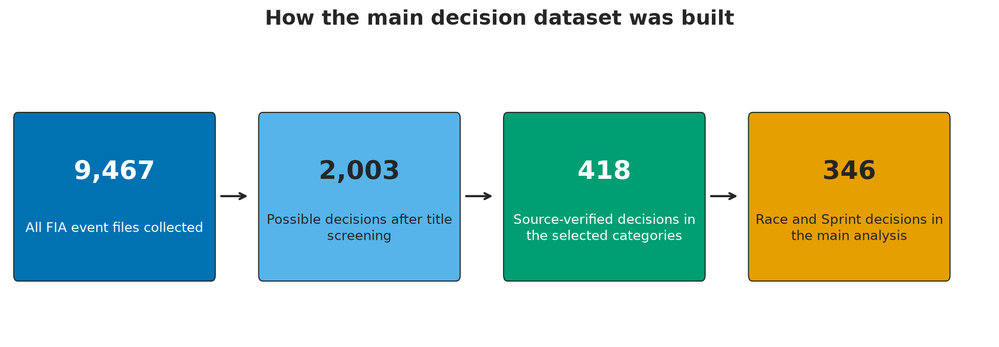
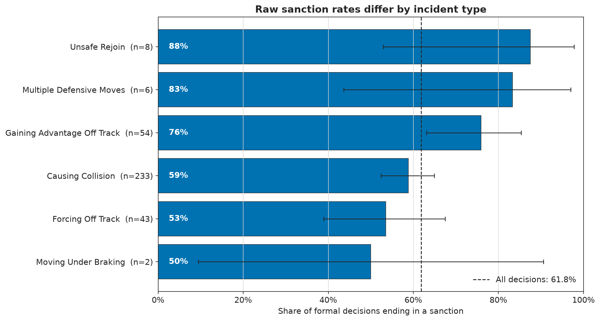
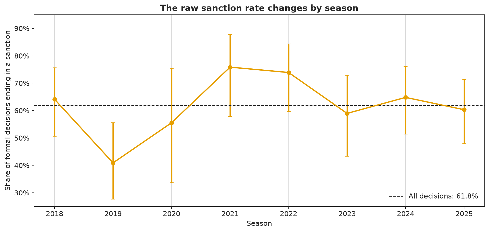
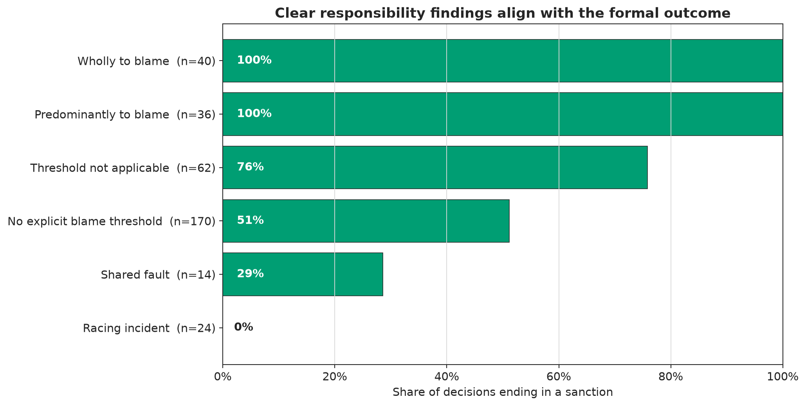
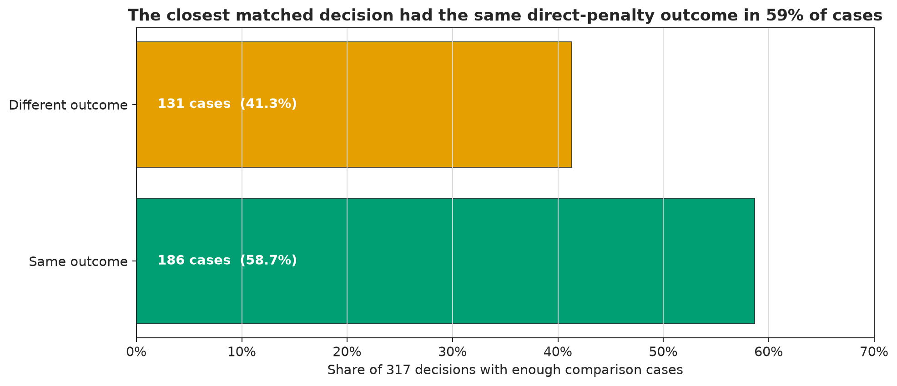
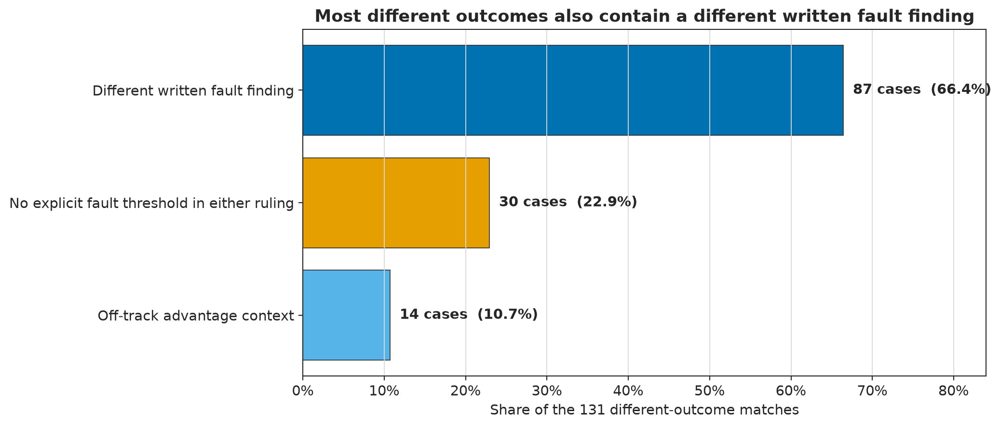
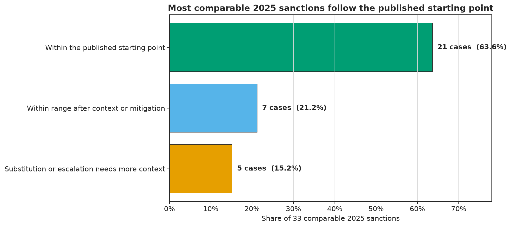
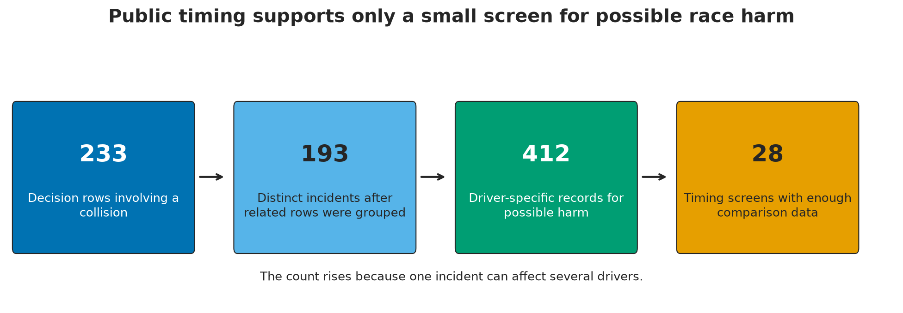
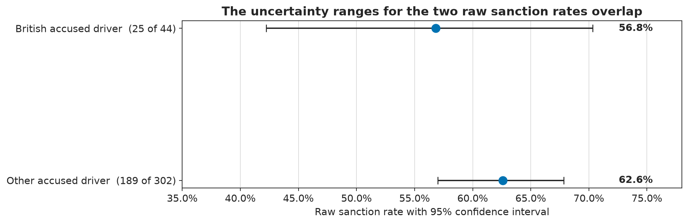

How Consistent Is Formula 1 Stewarding?¶
What FIA decisions from 2018 to 2025 show about fault, penalties, and fairness¶
Formula 1 fans regularly compare two incidents and ask why one driver received a penalty while another did not. These comparisons are understandable, but a television replay rarely shows the full basis of a stewarding decision. The written ruling may include details about overlap, control, track position, or mitigation that are easy to miss during a race.
This study tests whether the official record supports the belief that similar incidents receive inconsistent treatment. Each decision is followed through three separate stages: the conduct described by the stewards, their finding of responsibility, and the sanction they imposed. This separation identifies whether two cases differ because of the penalty or because the stewards first reached different conclusions about fault.
Two additional questions address claims that often appear in public debate. First, does the written penalty reflect the actual competitive cost to the driver? Second, do the available decisions support the claim that British drivers receive favorable treatment? Both are treated as secondary questions, and conclusions are limited to what the public evidence can support.
Index¶
- Defining a fair comparison
- Building the decision dataset
- Exploring the published decisions
- Testing how decisions are made
- Investigating different outcomes
- Checking decisions against the 2025 guidelines
- Separating penalties from race consequences
- Testing the nationality claim
- Conclusion TL;DR
- Answering the research question
- Improving future stewarding analysis
- Methods, limits, and reproducibility
- Sources and citations
Chapter 1: Defining a fair comparison¶
The analysis began by defining what consistency means in this setting. A consistent system should reach similar conclusions when the conduct and surrounding conditions are similar. It should not assign the same penalty to every collision, because two collisions can differ in overlap, driver control, track position, weather, or other facts used by the stewards.
Each FIA decision moves through three steps. The stewards describe the incident, decide how much responsibility each driver carried, and select an outcome such as no further action, a warning, or a sporting penalty. A difference at any one of these steps can produce two different final results.
The analysis separates the problem into five questions so that one type of difference is not mistaken for another:
- Conduct: Do comparable driving acts receive comparable responsibility findings?
- Sanction: Do comparable responsibility findings receive comparable penalties?
- Consequence: What happened to each driver affected by the incident?
- Race cost: What did the sanction actually cost after its timing and application are considered?
- Nationality: Do group differences remain credible after sample size and case context are checked?
The nationality question tests a specific claim about favorable treatment for British drivers. It is included because the claim appears often in fan discussions, not because it is assumed to be true. The evidence needed to evaluate group bias is also different from the evidence needed to compare two individual incidents.
The five questions were not combined into one fairness score. A decision can be internally consistent because the penalty follows the written fault finding, even if an outside reviewer disagrees with that finding. A penalty can also be correct under the rules but create a much smaller or larger race cost than the same nominal penalty in another event.
Chapter 2: Building the decision dataset¶
The FIA publishes decisions as separate documents within each event archive. The same archive also contains classifications, summonses, technical reports, and corrected versions of earlier files. For this reason, every archive entry could not be treated as one stewarding decision.
A total of 9,467 files were collected from 173 completed championship events and screened in stages. Only records that could answer the research question were retained, and the direct FIA source was preserved at every stage. The figure below shows how the broad archive became the main Race and Sprint dataset.

The 418 verified decisions contain 346 Race and Sprint cases for the main analysis and 72 qualifying impeding cases used only for supporting context.
The title screen identified 2,003 files that could contain a steward outcome. The source documents were then opened, administrative files and duplicate versions were removed, and decisions outside the selected incident categories were excluded. This process left 418 verified decisions with direct FIA citations.
The main analysis uses 346 decisions about driver conduct during a Race or Sprint. Another 72 qualifying impeding decisions were kept as a separate supporting dataset because qualifying and racing create different conditions. Mixing them would make the main sanction rate harder to interpret.
What one row represents¶
One row represents one accused driver in one formal decision. This unit matches the structure of an FIA ruling, which usually identifies the driver being investigated and the outcome assigned to that driver. A multi-car crash can create several decision rows, while a separate harm table records what happened to every affected participant.
What the dataset does not contain¶
The dataset contains formal decisions, not every comparable action that occurred on track. High-confidence Race Control referral links were found for 177 of the 346 main decisions, but that coverage was not enough to build a complete set of incidents that were noted, investigated, or ignored. The results are therefore conditional on an incident reaching the published decision stage.
Missing information was also treated as unknown. If a document did not describe overlap, damage, or mitigation, the condition was not assumed to be absent. This choice reduces the number of cases available for some comparisons, but it prevents silence in a short ruling from becoming false evidence.
These limits determine what the study can answer. Patterns can be tested within published decisions, but the rate at which comparable conduct was never referred cannot be estimated. Fault also cannot be assigned from lap timing or a race result when the supporting incident evidence is missing.
Chapter 3: Exploring the published decisions¶
Before individual cases were compared, the overall shape of the dataset was examined. The 346 main decisions came from 131 Race or Sprint events, and 214 decisions (61.8%) ended in some form of sanction. This percentage describes published decisions in the selected categories, not the chance that any action on track will be penalized.
The decisions were first grouped by incident type. This provides a baseline for understanding which categories usually lead to sanctions and which categories contain more uncertainty. A difference between categories is not evidence of unfair treatment by itself, because the conduct and decision standard can also differ.

Sample sizes appear in the category labels. The black intervals show statistical uncertainty, and the dashed line marks the 61.8% rate across all 346 decisions.

The annual rate ranges from 40.9% in 2019 to 75.9% in 2021. The figure does not adjust for changes in incident mix, written responsibility, or stewarding guidance.
Causing a collision accounts for 233 of the 346 decisions, making it the only incident family large enough to dominate the overall rate. Stewards imposed a sanction in 137 of those cases (58.8%). The rate was 75.9% for gaining an advantage off track (41 of 54) and 53.5% for forcing another driver off track (23 of 43).
The remaining categories contain between two and eight decisions each. Their percentages may look different, but the wide confidence intervals show how little precision those small samples provide. For example, the unsafe-rejoin rate is based on eight decisions, while the moving-under-braking rate is based on only two.
The annual sanction rate also changes across the study period, from 40.9% in 2019 to 75.9% in 2021. This range cannot be interpreted as a direct change in steward strictness because the mix of incidents, available evidence, referral practice, and guidance can change by season. The season plot identifies variation that needs explanation rather than giving the explanation itself.
This exploratory step showed that incident type and season are related to the observed rate, but neither explains how the stewards reasoned through a case. The analysis therefore moves from broad categories to the responsibility language written in each decision.
Chapter 4: Testing how decisions are made¶
The exploratory results describe the outcome, but they do not explain why the stewards reached it. For that reason, the decision process was tested at three levels. The written fault finding was first compared with the final outcome, then the predictive value of broad case labels was measured, and finally cases were matched using the detailed context available before the outcome.
Does the written fault finding match the outcome?¶
This is the most direct test of internal consistency. A finding that one driver was wholly or predominantly to blame should normally lead to a sanction. A racing-incident finding should normally lead to no further action.

Sample sizes appear beside each category. All 76 decisions finding a driver wholly or predominantly to blame imposed a sanction, while all 24 racing-incident findings ended with no further action.
The clearest responsibility findings align exactly with the final outcome. All 76 decisions that found a driver wholly or predominantly to blame imposed a sanction, while all 24 racing-incident findings ended with no further action. Within these 100 decisions, no formal outcome contradicted the written responsibility finding.
This result measures internal agreement, not whether the stewards assigned fault correctly. To answer that second question, the evidence would need to be reconstructed and the relevant rule applied independently in every case. The distinction matters because fans may reasonably disagree with a fault finding even when the penalty follows that finding in a consistent way.
The middle categories are less direct. Some decisions do not state a clear blame threshold, while off-track advantage cases depend on whether an advantage was gained, retained, or returned. The next test asks whether simpler labels can explain these outcomes without using the final fault finding.
Can broad case labels predict the outcome?¶
A simple model was fit using incident type, season, and whether more than two cars were involved. Its purpose was not to automate stewarding or decide which driver deserved a penalty. Instead, the model served as a diagnostic test of whether broad labels contain enough information to reproduce outcomes at events it had not seen.

The matching step did not use the eventual fault finding, penalty, damage, retirement, or finishing result. Warnings and reprimands were kept separate from penalties that directly changed race time, position, or the grid.
The model produced a ROC AUC of 0.558, where 0.500 represents chance ranking and 1.000 represents perfect ranking. Its Brier score improved by only 0.0005 over a baseline that assigned the overall sanction rate to every decision. These values show that the three broad labels add very little predictive information.
This weak performance is useful because it rules out a simple explanation. Knowing that a case was a collision in a particular season is not enough to anticipate the outcome. A stronger comparison therefore needed more of the incident context recorded before the stewards reached their finding.
What happens when similar cases are compared?¶
Decisions were matched using incident type, session, guideline era, first-lap status, wet conditions, restarts, overlap, and attacker line. The later fault finding, penalty, damage, retirement, and finishing result were intentionally excluded. This design prevents the outcome from deciding which cases count as similar.
Warnings and reprimands were also separated from penalties that directly change time, position, or the starting grid. Of the 346 main decisions, 317 had at least five possible comparison cases and could enter the matching screen. This support rule prevented isolated cases from being compared with a single weak match.
The closest available case had the same direct-penalty outcome in 186 decisions (58.7%) and a different outcome in 131 decisions (41.3%). The 131 differences identify cases that need additional review, but they do not show that the stewards made 131 errors. The matching data may still omit a fact that explains why the two decisions diverged.
Chapter 5: Investigating different outcomes¶
The matching screen produced 131 decisions whose closest comparison had a different direct-penalty outcome. The written responsibility finding that had been excluded from the matching step was then restored. This tests whether the outcomes differed because the stewards first reached different conclusions about fault.
This distinction changes the interpretation of a disputed pair. If two incidents receive different fault findings, the later difference in penalties may follow the written reasoning correctly. The remaining question is whether the public facts justify the different fault assessments.

The screen treats warnings and reprimands separately from penalties that directly affect race time or the grid. These are review categories, not proven stewarding errors.
What explains the 131 different outcomes?¶
The written fault finding differed in 87 of the 131 pairs (66.4%). In these pairs, the sanction usually followed the finding, so the disagreement begins with the stewards' assessment of responsibility. The matching fields may not contain every detail needed to decide whether that difference was justified.
Another 30 pairs (22.9%) had no explicit fault threshold in either ruling. A reader can see the outcome, but the short public explanation does not provide a shared responsibility standard for the comparison. The final 14 pairs (10.7%) involved off-track advantage, where the result can depend on whether the advantage was retained, returned, or caused by another driver.
This second review gives the 41.3% result a more useful meaning. Most different outcomes are linked to a different fault assessment, while the remaining cases are difficult to compare because the public reasoning is incomplete or uses a different decision framework. These categories still cannot be converted into a confirmed error count.
How well-known controversies fit the analysis¶
The same framework was next applied to several well-known controversies. These examples show where fan criticism comes from and why two incidents that look similar can produce different official results. The cases were selected for explanatory value, so they are not a random sample and cannot measure how often controversial decisions occur.
| Case and source | Recorded parameters | Assessment |
|---|---|---|
| Canada 2019 and Austria 2019, Document 50 | Canada: Car 5, unsafe rejoin, Car 44 forced off, five seconds; Austria: Cars 33 and 16, Turn 3, no predominant fault, no further action | Different incident types and fault thresholds prevent a direct precedent comparison. |
| Silverstone 2021, Document 50 | Car 44, Turn 9, predominantly at fault, ten seconds, two penalty points; Car 33 retired and Car 44 won | The case measures proportionality between conduct and harm, not nationality bias. |
| São Paulo 2021, Document 55 | Turn 4; forward and 360-degree footage classified as new, unavailable, and relevant; review rejected because the evidence was not significant | The record documents a limit in live evidence without proving the original outcome was incorrect. |
| Abu Dhabi 2021 WMSC review, 19 March 2022 | Safety Car procedure; conflicting interpretations of Articles 48.12 and 48.13; direct team radio pressure | The case concerns Race Control procedure and remains outside the 346 driver-conduct decisions. |
| Austin 2024, Document 69 and Mexico 2024, Document 47 plus Document 44 | Austin: Car 4, five seconds; Mexico: Car 1, Turn 4 and Turn 8, ten seconds for each ruling | The documents record different apex, space, and retained-advantage findings under the same broad standard. |
Cases that remain difficult to reconcile¶
| Case and source | Recorded parameters | Assessment |
|---|---|---|
| Japan 2024, Car 63 and Car 81 | Car 81 left the track to avoid contact, rejoined safely, retained the position, and received no action | The decision states that the driving standards did not cover this sequence. |
| Hungary 2025, Document 38 and Italy 2025, Document 38 | Hungary: Car 22 forced Car 27 off, both contributed, correct order restored, no action; Italy: Car 31 failed to leave Car 18 space, five seconds | The public reasons use restoration of order differently, so the pair remains unresolved. |
The Canada and Austria decisions from 2019 illustrate a common comparison problem. Both involved a driver being forced toward the edge of the track, but the FIA documents used different incident categories and responsibility thresholds. The pair can still motivate a useful discussion, but it does not provide a controlled comparison of the same rule.
The Austin and Mexico decisions from 2024 are closer because they use the same broad driving standard. Their written reasons still differ on apex position, space, and whether an advantage was retained. These details show why a label such as "forcing another driver off track" cannot replace the full decision text.
Japan 2024 and the Hungary and Italy decisions from 2025 remain harder to reconcile from the public record. The reasons refer to avoiding contact, restoring the original order, and shared contribution in ways that do not create one clear comparison rule. These cases do not prove systematic inconsistency, but they show where additional written explanation would improve transparency.
Across the full matching audit, 87 of the 131 different outcomes can be traced to a different written fault finding. The other 44 either lack an explicit shared threshold or depend on off-track advantage context. This is the part of the dataset where public concern about inconsistency has the strongest basis, even though the evidence is not sufficient to label the decisions incorrect.
Chapter 6: Checking decisions against the 2025 guidelines¶
Historical penalty comparisons have a basic limitation: the public ruling does not always state the starting penalty the stewards considered. In 2025, the FIA published Formula 1 driving standards and penalty guidance that made this process easier to evaluate. These documents provide a benchmark for decisions made while that public guidance was in effect.
The analysis found 33 sanctions from 2025 that could be mapped to a published starting point. Each sanction was classified by whether it plainly matched the guidance, fit the published range after context or mitigation, or used a substitution or escalation that needed more explanation. The 2025 guidance was never applied retrospectively to decisions from 2018 through 2024.

This comparison measures whether the sanction fits the public starting point after the stewards made a fault finding. It does not independently decide whether that fault finding was correct.
Of the 33 comparable sanctions, 21 (63.6%) matched the published starting point without additional interpretation. Seven more (21.2%) remained within the published range after the context or mitigation described by the stewards was considered. Together, 28 of the 33 sanctions fit the public guidance or its stated range.
The remaining five sanctions (15.2%) used a substitution or escalation that required more context than the public decision supplied. These were classified as transparency questions rather than rule violations because the stewards may have considered evidence that was not included in the document. The data support a question about explanation, not a conclusion that the sanction was improper.
This comparison shows the value of a public starting point. It gives analysts and fans a shared reference for evaluating the sanction after fault has been assigned. The remaining uncertainty could be reduced if each decision stated the starting point and explained every mitigation, escalation, or substitution.
Chapter 7: Separating penalties from race consequences¶
A written penalty and its competitive cost are not the same measurement. A five-second penalty can change several positions when added after the finish, change no position when the next driver is far behind, or affect traffic and strategy when served during the race. Comparing penalty seconds alone therefore misses part of the result.
Incident harm creates a separate measurement problem. Contact can cause a brief delay, a puncture, a repair stop, lasting damage, or a retirement. In a multi-car incident, each participant can suffer a different outcome, so harm was recorded at the driver level instead of assigning one consequence to the entire incident.
This structure was first tested on nine source-supported decisions. The examples below show why the written sanction, its realized competitive burden, and the harm from the incident were kept in separate fields.
| Case | Written sanction | How applied | Observed competitive burden |
|---|---|---|---|
| Pérez / Norris, Abu Dhabi 2023 | 5 seconds + 2 points | Added after the race | P4 to P2 without penalty; two places, six points, and a podium |
| Tsunoda / Colapinto, Austria 2025 | 10 seconds + 2 points | Served during the race | Not recoverable by subtracting 10 seconds; strategy and traffic changed |
| Colapinto / Piastri, Austria 2025 | 5 seconds + 1 point | Added after the race | No classification place and no points changed |
| Antonelli / Verstappen, Austria 2025 | 3 grid places + 2 points | At the next event | Starting position moved from P7 to P10; race effect not isolated |
The same five-second sanction produced two different observed costs in the pilot. Pérez lost two positions, six championship points, and a podium after his Abu Dhabi 2023 penalty was added at the finish. Colapinto's five-second Austria 2025 penalty changed neither his position nor his points.
Penalties served before the finish are harder to reconstruct. Tsunoda served ten seconds during the race, so subtracting ten seconds from his final time would ignore changes in strategy and traffic. Antonelli's three-place grid penalty moved his starting position from P7 to P10 at the next event, but its effect on his finishing position could not be isolated.
The nine harm records included one incident-caused retirement, three observed one-place losses, and one possible damage report without an immediate place loss. These cases confirmed that harm must be recorded for each driver and supported by a source. They also showed that a written penalty cannot serve as a substitute for measuring what the affected drivers lost.

The 28 timing screens are research leads, not confirmed damage effects. Tyres, traffic, strategy, weather, and hidden car conditions remain alternative explanations for a pace change.
The full collision screen began with 233 decision rows, which represented 193 distinct incidents after related rulings were grouped. Expanding those incidents to every potentially affected driver created 412 harm records. Only 28 records (6.8%) had enough same-lap teammate data for a timing screen, which makes a population-level damage estimate impractical with the available data.
A slower pace after contact can identify a case for further source review, but it cannot establish damage by itself. Tyres, traffic, strategy, weather, or an unrelated car problem can create the same pattern. The 28 timing results were therefore treated as research leads rather than confirmed effects.
No case in the full dataset contained all three forms of evidence needed for a proportionality conclusion: a clear fault finding, source-confirmed harm, and a measurable realized penalty cost. The pilot examples can be described, but the data cannot show whether FIA penalties are generally proportional or disproportional to race harm. Withholding that conclusion prevents a severe outcome from being treated as automatic proof that another driver deserved a larger penalty.
Chapter 8: Testing the nationality claim¶
Claims of favorable treatment for British drivers appear frequently after high-profile stewarding decisions. A collection of memorable examples cannot test that claim because fans are more likely to remember unusual or championship-relevant incidents. A useful test must compare the full group of British accused drivers with the other accused drivers in the main dataset.
This analysis asks whether the observed sanction rate differs by driver nationality. It does not judge any individual driver or steward, and it does not assume that a raw group difference is caused by bias. A credible result also requires enough British cases, comparable incident context, and enough statistical power to detect a meaningful difference.

The British group contains 44 decisions, below the prespecified minimum of 98. The raw 5.8-point difference is not an adjusted effect and the study lacks power for the planned 15-point test.
British accused drivers received sanctions in 25 of 44 decisions (56.8%). Other accused drivers received sanctions in 189 of 302 decisions (62.6%), a raw difference of 5.8 percentage points in the opposite direction from the favoritism claim. The 95% confidence intervals overlap, from 42.2% to 70.3% for British drivers and from 57.0% to 67.9% for other drivers.
The sample cannot support a strong conclusion from that difference. The British group contains 44 decisions, below the prespecified minimum of 98. Simulated power to detect a 15-point difference was 37.8% to 53.6%, well below the 80% target, so a meaningful difference could remain undetected.
The controversy examples from Chapter 5 cannot solve this problem because they were chosen for explanation rather than representation. FIA documents identify the stewarding panel but do not publish individual votes, which also prevents a decision from being linked to one steward's nationality. These limitations keep the nationality analysis descriptive.
Chapter 9: Answering the research question¶
TL;DR¶
The study asks whether Formula 1 stewarding treats similar incidents consistently. The results do not support a single yes-or-no answer because consistency changes depending on which part of the decision process is measured. The summary below connects each research question to the evidence used to answer it.
| Question | Main evidence | Conclusion |
|---|---|---|
| Does the formal outcome follow the written responsibility finding? | 76 of 76 clear blame findings led to sanctions; 24 of 24 racing-incident findings led to no further action | Yes, for the 100 clearest written findings |
| Do broad case labels explain the outcome? | ROC AUC 0.558; Brier improvement 0.0005 | No, incident type and season alone explain very little |
| Do the closest available cases receive the same direct penalty outcome? | 186 of 317 matched cases agreed; 131 differed | Often, but the 41.3% difference rate requires case review |
| What explains the different matched outcomes? | 87 of 131 had different written fault findings | Most differences begin in the responsibility assessment |
| Do 2025 sanctions follow public guidance? | 21 of 33 plainly matched; seven fit with context; five needed more context | Mostly, with a small set of transparency questions |
| Are penalties proportional to incident harm? | No case had complete fault, harm, and realized-cost evidence | The public data cannot answer this at population level |
| Do the data support British-driver bias? | 25 of 44 British cases sanctioned versus 189 of 302 others; power below 80% | Inconclusive |
The first part of the decision process appears internally consistent. Every clear blame finding led to a sanction, and every racing-incident finding led to no further action. Most comparable 2025 sanctions also followed the public starting point or its stated range.
The more difficult question is whether the stewards assigned responsibility consistently across similar incidents. Among the 131 closest matches with different direct-penalty outcomes, 87 also had different written fault findings. Some of those differences may reflect incident details missing from the structured data, while others remain difficult to explain from the public reasons.
This conclusion is narrower than a claim that the FIA is always fair. The study cannot measure comparable incidents that were never referred, and it cannot reconstruct every camera angle or piece of telemetry used by the stewards. It also lacks complete measures of incident harm, in-race penalty cost, and individual steward votes.
Stewards often make these decisions quickly with limited live evidence, which makes some variation understandable. Time pressure is context, however, not proof that a particular difference was justified. The public record still needs a clearer explanation when comparable incidents receive different responsibility findings.
Evidence needed for a stronger answer¶
- A complete record of comparable incidents that were noted, investigated, or never referred.
- More detailed context for the 131 matched cases with different direct-penalty outcomes.
- Source-confirmed damage, repair stops, retirements, and rare beneficial stops.
- Realized penalty-cost records, especially for penalties served during a race.
- A larger nationality sample and public information about individual steward votes.
Chapter 10: Improving future stewarding analysis¶
The largest limitations came from disconnected records, short public explanations, and missing measures of actual race cost. Better reporting would not remove judgment from stewarding, but it would make the basis of that judgment easier to compare. The following changes would reduce the amount of inference required from outside analysts.
For the FIA¶
- Publish structured decisions: Provide stable incident and decision IDs, accused and affected driver roles, session, lap, turn, finding, sanction, service timing, and version status.
- Connect the referral trail: Link “noted,” “investigated,” “no further action,” and formal decision messages to the same incident ID.
- Version the guidance: Identify the driving and penalty guideline active at each event and state the normal starting point plus aggravating or mitigating factors.
- Separate sanction from consequence: Publish what the penalty nominally was and when it was served; do not imply that seconds alone describe its competitive burden.
- Make corrections explicit: Retain the archive history but mark one effective version so outside analysts cannot double-count a ruling.
For future analysts¶
- Use models and close matches to prioritize source review, not to label a decision incorrect.
- Keep conduct, victim harm, and sanction burden in separate tables.
- Treat unavailable evidence as unknown, never as “no harm” or “no effect.”
- Report small samples and failed power gates as results rather than forcing a conclusion.
- Preserve a citation and evidence passage for every published case-level statement.
These recommendations follow directly from the analysis. Structured incident IDs would improve the referral population, clearer responsibility thresholds would strengthen case matching, and explicit penalty service details would improve the race-cost analysis. None of these changes requires the FIA to remove discretion from the stewards.
The next version of this study should focus on the 131 matched outcome differences and the 28 timing screens with enough comparison data. Those cases offer the greatest opportunity for targeted video, telemetry, and source review. A larger number of seasons would also improve the nationality analysis, but only if the incident context remains comparable over time.
Methods, limitations, and reproducibility¶
This section records the technical choices behind the report. These details are kept separate from the main narrative so the results remain readable while the analysis can still be reproduced and audited.
Data sources¶
- Official FIA event and timing pages, decision documents, classifications, Formula 1 regulations, and the International Sporting Code.
- FastF1 timing and Race Control feeds for timing and process context, not for assigning fault.
- Official Formula 1 reporting, team reports, and named driver or engineer accounts for damage research, with interested-party claims kept distinct from FIA findings and checked against official timing where possible.
Analytical design¶
The study is stored as a set of linked tables rather than one combined fairness score. The conduct table records the accused driver and written finding, the consequence table records harm to each affected driver, and the sanction table records the formal outcome and how it was applied.
- Archive coverage: 173 completed championship events, 2018 to 2025.
- Main dataset: 346 Race and Sprint driver-conduct decisions from 131 events.
- Supporting dataset: 72 qualifying impeding decisions, kept outside the main sanction rate.
- Primary unit: one accused-driver decision in a Race or Sprint.
- Primary scope: causing a collision, forcing another driver off track, gaining an advantage off track, unsafe rejoining, moving under braking, and multiple defensive moves.
- Inconsistency audit: full-corpus nearest-neighbor disagreements were separated by written fault language, then high-salience and residual gray-area cases were read against their official FIA decisions and contemporaneous governance documents.
- Tools: Python, Jupyter, pandas, DuckDB SQL, partitioned Parquet, Git, and automated tests.
- Portability: a locally validated Snowflake/Snowsight package is included; no live remote deployment is claimed.
- Validation: the full automated test suite and all final Study v2 release controls passed at the report commit.
Important limitations¶
The limitations below are part of the result, not only technical caveats. Each one identifies a question that the public data cannot answer reliably.
- Formal decisions are conditional on referral and do not represent every on-track act.
- The full source audit was model-led; it does not measure independent human agreement.
- Close-case context remains incomplete and is used only to prioritize review.
- Timing changes cannot by themselves establish damage or its cause.
- In-race penalty counterfactuals are altered by strategy, traffic, tyres, and later events.
- The nationality design is underpowered and cannot support an adjusted effect.
- The 2025 public guidelines are never applied retrospectively to earlier seasons.
- The highlighted controversy cases were chosen for explanatory value and are not a prevalence estimate of controversial decisions.
Evidence status¶
A release status was assigned to each major finding before the conclusion was written. Descriptive results were released when the source and unit of analysis were complete, while claims requiring missing context or failed statistical gates were withheld.
| Finding | Evidence level | Release decision |
|---|---|---|
| Source inventory and 418 included decisions | Strict source-cited model audit | Descriptive release |
| Full-corpus sanction and responsibility rates | Strict source-cited model audit | Descriptive release |
| Broad-label prediction model | Grouped out-of-event validation | Negative result; no case ranking |
| Close-case outcome contrasts | Outcome-blind screening | Review priorities only |
| Inconsistency and controversy audit | Official decisions plus FIA governance records | Bounded case-study interpretation |
| Nine-decision penalty-cost pilot | Independent double review | Case-level release |
| Full collision damage and pace effects | Timing and source screening | No population damage claim |
| 2025 guideline comparison | Contemporaneous public guidance | Descriptive/contextual release |
| Nationality association | Failed sample-size and power gates | Inconclusive |
Reproduction notes
The executable version is notebooks/12_study_v2_report.ipynb. The report reads immutable,
content-addressed source-audit and Study v2 artifacts.
Rebuild with
python scripts/build_study_v2_notebooks.py, then run pytest, ruff check src scripts tests, and
python scripts/audit_study_v2_completion.py. Run python scripts/audit_report_style.py to enforce
the public writing rules.
The public HTML hides code for readability. The notebook retains the executable code and outputs.
Sources and citations¶
Each source serves a specific purpose. FIA regulations and guidelines define the decision standard, while steward decisions record the official finding for one incident. Classifications and timing establish observed race results, and attributed team or driver reports provide limited case-specific damage evidence.
Timing data, news reports, and team statements were not used to assign fault. The tables below state the role and limitation of each source group, allowing governing evidence to be separated from supporting context.
Rules and governing material¶
| Source | How it was used | Important limit |
|---|---|---|
| FIA Formula 1 Regulations Archive | Event-date Sporting Regulations and sanction authority | The applicable issue can change during a season. |
| FIA International Sporting Code and Appendices | Steward powers, protests, reviews, appeals, and general driving rules | Multiple editions may exist in the same year. |
| 2025 F1 Driving Standards Guidelines, version 4.1 | The contemporaneous overtaking and driving-standard comparison in Chapter 6 | Guidance, not a regulation; not applied to earlier seasons. |
| 2025 FIA Penalty Guidelines | Public sanction starting points and penalty-point ranges | Context can justify mitigation, escalation, or substitution. |
FIA process and policy context¶
| Source | How it was used | Important limit |
|---|---|---|
| FIA explanation of publishing the stewarding guidelines | Status, purpose, and history of the public guidance | Does not reconstruct every historical internal guideline. |
| FIA explanation of how the guidelines are applied | Living-document status, evidence limits, and first-lap tolerance | General explanation rather than a case ruling. |
| FIA steward and driver discussion on revising the guidelines | Context for the post-Austin 2024 rule discussion | Describes the reform process, not whether one driver deserved a penalty. |
| FIA 2021 Abu Dhabi review to the World Motor Sport Council | Governance case study separating Race Control procedure from ordinary steward penalties | Outside the study's driver-conduct penalty population. |
| Formula 1 interview with the 2021 Race Director | Contemporary explanation that stewards assessed conduct rather than the eventual consequence | An attributed policy explanation, not governing law. |
Timing, results, and damage evidence¶
| Source | How it was used | Important limit |
|---|---|---|
| FIA event and timing pages | Official classifications, grids, lap charts, pit-stop summaries, and Race Control records | They establish observed results, not a no-incident counterfactual. |
| FastF1 data reference | Lap timing, position, pit, track-status, and Race Control context | Timing alone cannot prove damage, causation, or fault. |
| Official Formula 1 race reporting | Attributed interviews, race sequencing, and damage context | Secondary to an FIA finding and explicitly attributed. |
The independently reviewed consequence pilot also used the following case-level, non-decision sources. They support only the particular fact described here:
- Gasly's Abu Dhabi 2023 damage account: attributed diffuser damage and downforce loss, with earlier contact kept as a confounding cause.
- Official Abu Dhabi 2023 race report: race order and incident sequence around the Pérez and Norris contact.
- Alpine's Austrian 2025 debrief: Colapinto's first-party report that the car felt different after contact; coded as possible, not confirmed, damage.
- Official Austrian 2025 race analysis: the effect of backmarker traffic on Piastri's pursuit, without assigning an exact time loss.
- Verstappen's Austrian 2025 post-race account: contextual confirmation of the race-ending collision, paired with the FIA classification.
- Official British 2025 race report: race context after Antonelli served the carried Austrian grid penalty; not used to invent a counterfactual finish.
Third-party databases, media searches, broadcasts, photographs, and social posts could identify leads, but they did not establish the study's published fault or fairness findings.
Decision-level FIA sources¶
Every included primary and secondary decision has a direct FIA citation. The 418-row table is collapsed so the source audit remains available without interrupting the main report. The downloadable file also contains 502 exclusion checks, evidence passages, correction history, rule sources, confidence fields, and review status.
Open all 418 FIA decision citations
| season | event_name | review_scope | title | document_id | FIA source |
|---|---|---|---|---|---|
| 2018 | Abu Dhabi Grand Prix | primary | Offence Doc38 - F.Alonso | fia-2018-abu-18bc30990ea3 | Official decision |
| 2018 | Abu Dhabi Grand Prix | primary | Offence Doc39 - F.Alonso | fia-2018-abu-754824eaae10 | Official decision |
| 2018 | Abu Dhabi Grand Prix | primary | Stewards Decision Doc35 - N.Hülkenberg | fia-2018-abu-b67f80da207e | Official decision |
| 2018 | Abu Dhabi Grand Prix | primary | Offence Doc37- F.Alonso | fia-2018-abu-ba74bbf1e4a2 | Official decision |
| 2018 | Abu Dhabi Grand Prix | primary | Offence Doc36 - E.Ocon | fia-2018-abu-e3bd8959c0f4 | Official decision |
| 2018 | Austrian Grand Prix | primary | Offence Doc42- K.Räikkönen | fia-2018-aut-6376daf466a5 | Official decision |
| 2018 | Austrian Grand Prix | primary | Offence Doc43 - C.Sainz | fia-2018-aut-9c50973f6716 | Official decision |
| 2018 | Azerbaijan Grand Prix | primary | Stewards Decision Doc46 - M.Verstappen | fia-2018-aze-1bbf84530187 | Official decision |
| 2018 | Azerbaijan Grand Prix | primary | Stewards Decision Doc33 - M.Ericsson | fia-2018-aze-23f8b0b5b715 | Official decision |
| 2018 | Azerbaijan Grand Prix | primary | Stewards Decision Doc31 - E.Ocon | fia-2018-aze-3e59a6773794 | Official decision |
| 2018 | Azerbaijan Grand Prix | primary | Stewards Decision Doc47 - S.Sirotkin (Correction) | fia-2018-aze-4fbe7e105140 | Official decision |
| 2018 | Azerbaijan Grand Prix | primary | Stewards Decision Doc45 - D.Ricciardo | fia-2018-aze-94399ce60452 | Official decision |
| 2018 | Azerbaijan Grand Prix | primary | Stewards Decision Doc43 - K.Magnussen | fia-2018-aze-b6df36c282b7 | Official decision |
| 2018 | Belgian Grand Prix | primary | Offence Doc40 - V.Bottas | fia-2018-bel-5f9336c3c23e | Official decision |
| 2018 | Belgian Grand Prix | primary | Offence Doc39 - N.Hulkenberg | fia-2018-bel-6346000a9777 | Official decision |
| 2018 | Bahrain Grand Prix | primary | Stewards Decision Doc27 - B.Hartley | fia-2018-bhr-37959695abd9 | Official decision |
| 2018 | Brazilian Grand Prix | primary | Summons Doc33 - E.Ocon | fia-2018-bra-1cf7293f9bee | Official decision |
| 2018 | Canadian Grand Prix | primary | Stewards Decision Doc27 - L.Stroll | fia-2018-can-6ea0e0275da8 | Official decision |
| 2018 | Canadian Grand Prix | primary | Steward Decision Doc28 - C.Sainz | fia-2018-can-fa41432364aa | Official decision |
| 2018 | Chinese Grand Prix | primary | Stewards Decision Doc29 - P.Gasly | fia-2018-chn-ad3c0076d583 | Official decision |
| 2018 | Chinese Grand Prix | primary | Stewards Decision Doc30 - M.Verstappen | fia-2018-chn-e98fbe4695b8 | Official decision |
| 2018 | Spanish Grand Prix | primary | Stewards Decision Doc39 - R.Grosjean | fia-2018-esp-231d287cafcd | Official decision |
| 2018 | French Grand Prix | primary | Offence Doc 53 - E.Ocon | fia-2018-fra-505561fd0edc | Official decision |
| 2018 | French Grand Prix | primary | Stewards Decision Doc46 - R.Grosjean | fia-2018-fra-80f5d9447315 | Official decision |
| 2018 | French Grand Prix | primary | Offence Doc 52 - P.Gasly | fia-2018-fra-db6e1870bc40 | Official decision |
| 2018 | French Grand Prix | primary | Offence Doc 43 - S.Vettel | fia-2018-fra-e65d0d06dbb7 | Official decision |
| 2018 | British Grand Prix | primary | Stewards Decision Doc56- P.Gasly | fia-2018-gbr-33466a876bdd | Official decision |
| 2018 | British Grand Prix | primary | Stewards Decision Doc55- R.Grosjean | fia-2018-gbr-70534cc8d2b4 | Official decision |
| 2018 | British Grand Prix | primary | Stewards Decision Doc44- K.Magnussen | fia-2018-gbr-c4ec3bfd58d1 | Official decision |
| 2018 | British Grand Prix | primary | Stewards Decision Doc43- R.Grosjean | fia-2018-gbr-dbd297e3a1ec | Official decision |
| 2018 | British Grand Prix | primary | Stewards Decision Doc42- K.Räikkönen | fia-2018-gbr-f20a2f7cd356 | Official decision |
| 2018 | Hungarian Grand Prix | primary | Offence Doc37 - V.Bottas | fia-2018-hun-4bfaca494290 | Official decision |
| 2018 | Italian Grand Prix | primary | Stewards Decision Doc35 - L.Hamilton | fia-2018-ita-46eec3615f40 | Official decision |
| 2018 | Italian Grand Prix | primary | Offence Doc36- M.Verstappen | fia-2018-ita-4bcc40bb113b | Official decision |
| 2018 | Italian Grand Prix | primary | Stewards Decision Doc34 - S.Vettel | fia-2018-ita-a3456e32915c | Official decision |
| 2018 | Japanese Grand Prix | primary | Stewards Decision Doc38 - S.Vettel | fia-2018-jpn-81677672dab7 | Official decision |
| 2018 | Japanese Grand Prix | primary | Offence Doc36 - L.Stroll | fia-2018-jpn-a4bf4fc25a1f | Official decision |
| 2018 | Japanese Grand Prix | primary | Offence Doc 37 - F.Alonso | fia-2018-jpn-af0be8505555 | Official decision |
| 2018 | Japanese Grand Prix | primary | Stewards Decision Doc35 - C.Leclerc | fia-2018-jpn-b456aafdefec | Official decision |
| 2018 | Japanese Grand Prix | primary | Offence Doc34. M.Verstappen | fia-2018-jpn-d5d56e0426c6 | Official decision |
| 2018 | Monaco Grand Prix | primary | Stewards Decision Doc46 - C.Leclerc | fia-2018-mco-a3c31b11ff12 | Official decision |
| 2018 | Mexican Grand Prix | primary | Stewards Decision Doc36 - E.Ocon | fia-2018-mex-3075233c69d9 | Official decision |
| 2018 | Mexican Grand Prix | primary | Offence Doc35 - B.Hartley | fia-2018-mex-9fdf8480489c | Official decision |
| 2018 | Russian Grand Prix | primary | Stewards Decision Doc42 - S.Vettel | fia-2018-rus-cf28ebf731bb | Official decision |
| 2018 | Singapore Grand Prix | primary | Stewards Decision Doc34 - K.Magnussen | fia-2018-sgp-21e75b934044 | Official decision |
| 2018 | Singapore Grand Prix | primary | Offence Doc36 - S.Sirotkin | fia-2018-sgp-329a49e8cbe6 | Official decision |
| 2018 | Singapore Grand Prix | primary | Stewards Decision Doc32 - S.Perez | fia-2018-sgp-bcfc0b21409a | Official decision |
| 2018 | Singapore Grand Prix | primary | Offence Doc33 - S.Perez | fia-2018-sgp-d22646811c1a | Official decision |
| 2018 | United States Grand Prix | primary | Offence Doc47 - R.Grosjean | fia-2018-usa-2f4f21fa003f | Official decision |
| 2018 | United States Grand Prix | primary | Offence Doc44 - C.Sainz | fia-2018-usa-49d225f5fb07 | Official decision |
| 2018 | United States Grand Prix | primary | Offence Doc38 - L.Stroll | fia-2018-usa-856ae8b1622a | Official decision |
| 2018 | United States Grand Prix | primary | Stewards Decision Doc39 - D.Ricciardo | fia-2018-usa-b97b2be7b15e | Official decision |
| 2018 | United States Grand Prix | primary | Stewards Decision Doc40 - S.Vettel | fia-2018-usa-dc3270dd6cb6 | Official decision |
| 2019 | Abu Dhabi Grand Prix | primary | Decision - Car 88 (incident with car 99 in turn 12) | fia-2019-abu-e94aca06904a | Official decision |
| 2019 | Abu Dhabi Grand Prix | primary | Decision - Car 99 (incident with car 88 in turn 12) | fia-2019-abu-eed6b57f5b3f | Official decision |
| 2019 | Austrian Grand Prix | primary | Decision - Car 33 (Turn 3 incident with car 16) | fia-2019-aut-529bae08f480 | Official decision |
| 2019 | Austrian Grand Prix | primary | Decision - Car 16 (Incident with car 33 in turn 3) | fia-2019-aut-f8011f674d7f | Official decision |
| 2019 | Azerbaijan Grand Prix | primary | Offence - Car 3 (Turn 4 Incident) | fia-2019-aze-9a6772a3acaf | Official decision |
| 2019 | Belgian Grand Prix | primary | Decision - Car 11 (alleged forcing a driver off the track) | fia-2019-bel-0c5b8806e8e5 | Official decision |
| 2019 | Bahrain Grand Prix | primary | Decision - Car 33 (Turn 4 incident with car 55) | fia-2019-bhr-132a9d8aa9de | Official decision |
| 2019 | Bahrain Grand Prix | primary | Decision - Car 99 (Turn 11 incident with car 26) | fia-2019-bhr-1365948cf7e0 | Official decision |
| 2019 | Bahrain Grand Prix | primary | Decision - Car 55 (turn 4 incident with car 33) | fia-2019-bhr-2a5a65873384 | Official decision |
| 2019 | Bahrain Grand Prix | primary | Decision - Car 26 (Turn 11 incident with car 99) | fia-2019-bhr-afcfec60fa35 | Official decision |
| 2019 | Brazilian Grand Prix | primary | Decision - Car 16 (incident with car 5 in turn 4) | fia-2019-bra-0197a870d5b2 | Official decision |
| 2019 | Brazilian Grand Prix | primary | Decision - Car 5 (incident with car 16 in turn 4) | fia-2019-bra-38ee05c4fb59 | Official decision |
| 2019 | Brazilian Grand Prix | primary | Offence - Car 44 (incident with car 23 in turn 10) | fia-2019-bra-810d6e70c069 | Official decision |
| 2019 | Brazilian Grand Prix | primary | Offence - Car 3 (incident with car 20 in turn 4) | fia-2019-bra-b956905dbc4f | Official decision |
| 2019 | Canadian Grand Prix | primary | Offence - Car 5 (re-joinged unsafely and forced car 44 of the track) | fia-2019-can-dceb9101c747 | Official decision |
| 2019 | Chinese Grand Prix | primary | Offence - Car 26 (Causing a collision in turn 6) | fia-2019-chn-50a2b4dfbc09 | Official decision |
| 2019 | German Grand Prix | primary | Decision - Car 10 (Incident with car 23 after turn 6) | fia-2019-deu-439337838994 | Official decision |
| 2019 | Spanish Grand Prix | primary | Decision - Car 18 (T2 Incident) | fia-2019-esp-1de5310a284d | Official decision |
| 2019 | Spanish Grand Prix | primary | Decision - Car 4 (T2 Incident) | fia-2019-esp-c8e31ce09c58 | Official decision |
| 2019 | French Grand Prix | primary | Offence - Car 3 (Leaving the track and re-joining unsafely) | fia-2019-fra-457ded17de98 | Official decision |
| 2019 | French Grand Prix | primary | Offence - Car 11 (leaving the track and gaining an advantage) | fia-2019-fra-a0c241fafdd8 | Official decision |
| 2019 | French Grand Prix | primary | Offence - Car 3 (leaving the track and gaining an advantage) | fia-2019-fra-a2fbe5bfb237 | Official decision |
| 2019 | British Grand Prix | primary | Offence - Car 5 (causing a collision with car 33) | fia-2019-gbr-9cce23a29f05 | Official decision |
| 2019 | Italian Grand Prix | primary | Offence - Car 5 (leaving the track and rejoining unsafely) | fia-2019-ita-5d8bd476d009 | Official decision |
| 2019 | Italian Grand Prix | primary | Offence - Car 23 (leaving the track and gaining an advantage) | fia-2019-ita-e4746c5c634f | Official decision |
| 2019 | Italian Grand Prix | primary | Offence - Car 18 (rejoined the track unsafely) | fia-2019-ita-ef49a857f7de | Official decision |
| 2019 | Japanese Grand Prix | primary | Offence - Car 16 (turn 1 incident with car 33) | fia-2019-jpn-4a022963168d | Official decision |
| 2019 | Japanese Grand Prix | primary | Decision - Car 10 (incident with car 11 in turn 2) | fia-2019-jpn-8f4df880b95b | Official decision |
| 2019 | Japanese Grand Prix | primary | Decision - Car 33 (turn 1 incident with car 16) | fia-2019-jpn-9be40f8bba4d | Official decision |
| 2019 | Japanese Grand Prix | primary | Decision - Car 11 (turn 2 incident with car 10) | fia-2019-jpn-ddc6b3eef5b1 | Official decision |
| 2019 | Monaco Grand Prix | primary | Offence - Car 20 (Leaving the track and gaining an advantage) | fia-2019-mco-6d869f39c68e | Official decision |
| 2019 | Monaco Grand Prix | primary | Offence - Car 99 (Collision with car 88 in Turn 18) | fia-2019-mco-8441c7d5dbef | Official decision |
| 2019 | Monaco Grand Prix | primary | Decision - Car 33 (Incident with car 44 in Turn 10) | fia-2019-mco-93dff725c78b | Official decision |
| 2019 | Monaco Grand Prix | primary | Offence - Car 18 (leaving the track and gaining an advantage) | fia-2019-mco-b0bed801d3e3 | Official decision |
| 2019 | Monaco Grand Prix | primary | Decision - Car 44 (Incident with car 33 in turn 10) | fia-2019-mco-bf9eeec70400 | Official decision |
| 2019 | Mexican Grand Prix | primary | Offence - Car 26 (Turn 16 incident with car 27) | fia-2019-mex-9a84e5496c6b | Official decision |
| 2019 | Singapore Grand Prix | primary | Decision - Car 7 (Turn 1 incident with car 26) | fia-2019-sgp-4f116694a24c | Official decision |
| 2019 | Singapore Grand Prix | primary | Decision - Car 63 (Turn 8 incident with car 8) | fia-2019-sgp-6c9e26d4cab3 | Official decision |
| 2019 | Singapore Grand Prix | primary | Decision - Car 8 (Turn 8 Incident with car 63) | fia-2019-sgp-6db2310a0bec | Official decision |
| 2019 | Singapore Grand Prix | primary | Decision - Car 26 (Turn 1 incident with car 7) | fia-2019-sgp-ab76599fc615 | Official decision |
| 2019 | Singapore Grand Prix | primary | Decision - Car 27 (Turn 5 incident with car 55) | fia-2019-sgp-d456f4419d4f | Official decision |
| 2019 | Singapore Grand Prix | primary | Decision - Car 55 (Turn 5 incident with car 27) | fia-2019-sgp-e6c461804492 | Official decision |
| 2019 | United States Grand Prix | primary | Offence - Car 26 (incident with car 11 in turn 15) | fia-2019-usa-d3bdd32ef24c | Official decision |
| 2019 | United States Grand Prix | primary | Decision - Car 23 (Incident with car 55 in turn 1) | fia-2019-usa-e8891601d008 | Official decision |
| 2020 | 70th Anniversary Grand Prix | primary | Offence - Car 20 - Re-joined the track in an unsafe manner | fia-2020-70a-2f908d545c9e | Official decision |
| 2020 | Austrian Grand Prix | primary | Offence - Car 44 - incident with car 23 | fia-2020-aut-61b974e38056 | Official decision |
| 2020 | Bahrain Grand Prix | primary | Offence - Car 26 - collision with car 18 | fia-2020-bhr-5b520e69cfdd | Official decision |
| 2020 | Eifel Grand Prix | primary | Offence - Car 7 - causing a collision with car 63 | fia-2020-eif-3377de36ccd9 | Official decision |
| 2020 | Eifel Grand Prix | primary | Offence - Car 23 - causing a collision with car 26 | fia-2020-eif-588d347b498e | Official decision |
| 2020 | Emilia Romagna Grand Prix | primary | Decision - Car 5 - Turn 7 incident with car 20 | fia-2020-emi-399ca2a328b0 | Official decision |
| 2020 | Spanish Grand Prix | primary | Decision - Car 99 - Allegedly forcing another driver off the track at turn 2 | fia-2020-esp-bc594cf0008c | Official decision |
| 2020 | British Grand Prix | primary | Offence - Car 8 - Alleged moving under braking in turn 6 | fia-2020-gbr-09d0b07d741a | Official decision |
| 2020 | British Grand Prix | primary | Offence - Car 23 - Incident with Car 20 at Turn 18 | fia-2020-gbr-319c8c2d52b9 | Official decision |
| 2020 | Italian Grand Prix | primary | Offence - Car 23 - Turn 1 incident with car 8 | fia-2020-ita-3d5494c6edc8 | Official decision |
| 2020 | Italian Grand Prix | primary | Decision - Car 33 - T2 incident with car 11 | fia-2020-ita-5e5acd0fdb41 | Official decision |
| 2020 | Portuguese Grand Prix | primary | Offence - Car 18 - collision with car 4 | fia-2020-por-69db98466a96 | Official decision |
| 2020 | Sakhir Grand Prix | primary | Offence - Car 16 - causing a collision | fia-2020-skh-9e2651e5d5ba | Official decision |
| 2020 | Styrian Grand Prix | primary | Decision - Car 18 - Incident with car 3 | fia-2020-sty-965461bfbe13 | Official decision |
| 2020 | Tuscan Grand Prix | primary | Decision - Car 8 - Turn 2 Incident | fia-2020-tus-3299714baba8 | Official decision |
| 2020 | Tuscan Grand Prix | primary | Decision - Car 33 - Turn 2 Incident | fia-2020-tus-65bfe923f953 | Official decision |
| 2020 | Tuscan Grand Prix | primary | Decision - Car 10 - Turn 2 Incident | fia-2020-tus-8b2908d46c54 | Official decision |
| 2020 | Tuscan Grand Prix | primary | Decision - Car 7 - Turn 2 Incident | fia-2020-tus-8f4aa7153d82 | Official decision |
| 2021 | Austrian Grand Prix | primary | Offence - Car 11 - forcing another driver off the track T6 | fia-2021-aut-01e04f2a38ce | Official decision |
| 2021 | Austrian Grand Prix | primary | Offence - Car 7 - causing a collision with car 5 | fia-2021-aut-5bb9fcd0e3b6 | Official decision |
| 2021 | Austrian Grand Prix | primary | Offence - Car 11 - forcing another driver off the track T4 | fia-2021-aut-5c20f18ec25e | Official decision |
| 2021 | Austrian Grand Prix | primary | Decision - Car 63 - alleged moving under braking | fia-2021-aut-634bfff34401 | Official decision |
| 2021 | Austrian Grand Prix | primary | Offence - Car 4 - forcing another driver off the track | fia-2021-aut-f412d61f822f | Official decision |
| 2021 | Bahrain Grand Prix | primary | Offence - Car 5 - Causing a collision | fia-2021-bhr-4c375a5d45e3 | Official decision |
| 2021 | Emilia Romagna Grand Prix | primary | Offence - Car 18 - Leaving the track and gaining an advantage | fia-2021-emi-791fd6e0a7e9 | Official decision |
| 2021 | Emilia Romagna Grand Prix | primary | Decision - Car 63 - Incident with car 77 in turn2 | fia-2021-emi-ac5240ba7d02 | Official decision |
| 2021 | Spanish Grand Prix | primary | Decision - Car 14 - Turn 2 Incident with car 18 | fia-2021-esp-fee027bbec83 | Official decision |
| 2021 | British Grand Prix | primary | Offence - Car 63 - Causing a collision | fia-2021-gbr-2ca2a34d14e0 | Official decision |
| 2021 | British Grand Prix | primary | Offence - Car 44 - Causing a collision with car 33 | fia-2021-gbr-2edd347d5de5 | Official decision |
| 2021 | British Grand Prix | primary | Decision - Car 11 - Turn 17 incident with car car 7 | fia-2021-gbr-74d32cf58767 | Official decision |
| 2021 | British Grand Prix | primary | Decision - Car 55 - alleged re-joining the track unsafely | fia-2021-gbr-8b960af59804 | Official decision |
| 2021 | Hungarian Grand Prix | primary | Offence - Car 77 - causing a collision | fia-2021-hun-06f5959922b8 | Official decision |
| 2021 | Hungarian Grand Prix | primary | Offence - Car 18 - causing a collision | fia-2021-hun-62b291657006 | Official decision |
| 2021 | Italian Grand Prix | primary | Offence - Car 31 - collision with car 5 in turn 4 | fia-2021-ita-4c12fa91b10c | Official decision |
| 2021 | Italian Grand Prix | primary | Offence - Car 11 - leaving the track and gaining an advantage | fia-2021-ita-7d9dacc5104e | Official decision |
| 2021 | Italian Grand Prix | primary | Offence - Car 99 - Re-joining the track in an unsafe manner | fia-2021-ita-7df29923e8ce | Official decision |
| 2021 | Italian Grand Prix | primary | Offence - Car 9 - causing a collision with car 47 | fia-2021-ita-92b2944f6398 | Official decision |
| 2021 | Italian Grand Prix | primary | Decision - Car 11 - alleged leaving the track and gaining an advantage | fia-2021-ita-c67ef61c2b22 | Official decision |
| 2021 | Italian Grand Prix | primary | Offence - Car 33 - Causing a collision | fia-2021-ita-d726c5d4355d | Official decision |
| 2021 | Russian Grand Prix | primary | Offence - Car 18 - Collision with car 10 in turn 8 | fia-2021-rus-cc74bb905576 | Official decision |
| 2021 | São Paulo Grand Prix | primary | Offence - Car 22 - Collision with car 18 | fia-2021-sao-2a5ecda10fa1 | Official decision |
| 2021 | Saudi Arabian Grand Prix | primary | Offence - Car 33 - Causing a collision | fia-2021-sau-0959688f5106 | Official decision |
| 2021 | Saudi Arabian Grand Prix | primary | Decision - Car 11 - Turn 3 incident | fia-2021-sau-d305cebeff15 | Official decision |
| 2021 | Saudi Arabian Grand Prix | primary | Offence - Car 22 - Causing a collision | fia-2021-sau-df60d44ca35e | Official decision |
| 2021 | Saudi Arabian Grand Prix | primary | Offence - Car 33 - Leaving the track and gaining an advantage | fia-2021-sau-e76c180b19e5 | Official decision |
| 2021 | Turkish Grand Prix | primary | Offence - Car 14 - collision with car 47 | fia-2021-tur-8316f5ba45fb | Official decision |
| 2021 | Turkish Grand Prix | primary | Offence - Car 10 - Collision with car 14 (corrected) | fia-2021-tur-93d16b7d94df | Official decision |
| 2022 | Abu Dhabi Grand Prix | primary | Offence - Car 47 - Causing a collision | fia-2022-abu-6afd5d82f378 | Official decision |
| 2022 | Australian Grand Prix | primary | Offence - Car 18 - More than one change of direction | fia-2022-aus-49ed71794697 | Official decision |
| 2022 | Australian Grand Prix | primary | Decision - Car 20 - Allegedly forcing another driver off the track | fia-2022-aus-60118fcf81d1 | Official decision |
| 2022 | Austrian Grand Prix | primary | Offence - Car 10 - Causing a collision | fia-2022-aut-0b612be0b626 | Official decision |
| 2022 | Austrian Grand Prix | primary | Offence - Car 63 - Causing a collision | fia-2022-aut-116bb7866055 | Official decision |
| 2022 | Austrian Grand Prix | primary | Offence - Car 23 - Forcing another driver off the track | fia-2022-aut-ab1a77f87104 | Official decision |
| 2022 | Belgian Grand Prix | primary | Offence - Car 44 - Alleged causing a collision | fia-2022-bel-dac27d1c3f36 | Official decision |
| 2022 | Bahrain Grand Prix | primary | Offence - Car 31 - Causing a collision | fia-2022-bhr-139703df6539 | Official decision |
| 2022 | Bahrain Grand Prix | primary | Decision - Car 18 - Alleged forcing another driver off the track | fia-2022-bhr-3f720bfded90 | Official decision |
| 2022 | Canadian Grand Prix | primary | Offence - Car 14 - More than one change of direction | fia-2022-can-cf2e6248bf5e | Official decision |
| 2022 | Spanish Grand Prix | primary | Offence - Car 10 - causing a collision with car 18 | fia-2022-esp-9eba7bd2599a | Official decision |
| 2022 | French Grand Prix | primary | Offence - Car 24 - Causing a collision | fia-2022-fra-21ed142c13a0 | Official decision |
| 2022 | French Grand Prix | primary | Offence - Car 31 - Causing a collision | fia-2022-fra-5b00af9baee5 | Official decision |
| 2022 | French Grand Prix | primary | Decision - Car 6 - Alleged incident with car 20 | fia-2022-fra-832a818ac903 | Official decision |
| 2022 | French Grand Prix | primary | Decision - Car 20 - Alleged incident with car 6 | fia-2022-fra-f29d68ccd9b0 | Official decision |
| 2022 | British Grand Prix | primary | Offence - Car 22 - Causing a collision | fia-2022-gbr-81e6a9badf51 | Official decision |
| 2022 | Hungarian Grand Prix | primary | Decision - Car 24 - Allegedly leaving the track and gaining an advantage | fia-2022-hun-12e2b5910b5d | Official decision |
| 2022 | Hungarian Grand Prix | primary | Offence - Car 3 - Causing a collision | fia-2022-hun-3dec8ba58233 | Official decision |
| 2022 | Italian Grand Prix | primary | Offence - Car 20 - Leaving the track and gaining an advantage | fia-2022-ita-cd52e475af6e | Official decision |
| 2022 | Japanese Grand Prix | primary | Offence - Car 16 - Leaving the track and gaining an advantage | fia-2022-jpn-786e23bdcd54 | Official decision |
| 2022 | Monaco Grand Prix | primary | Offence - Car 31 - Causing a collision | fia-2022-mco-97b07e9513b1 | Official decision |
| 2022 | Monaco Grand Prix | primary | Offence - Car 23 - Leaving the track and gaining an advantage | fia-2022-mco-a85320aa2719 | Official decision |
| 2022 | Mexico City Grand Prix | primary | Offence - Car 10 - Leaving the track and gaining an advantage | fia-2022-mex-0c20b3af2f45 | Official decision |
| 2022 | Mexico City Grand Prix | primary | Offence - Car 3 - Causing a collision | fia-2022-mex-9975b4f5dd0e | Official decision |
| 2022 | Miami Grand Prix | primary | Decision - Car 20 - Collision with car 18 in turn 2 | fia-2022-mia-200cbc833915 | Official decision |
| 2022 | Miami Grand Prix | primary | Decision - Car 18 - Collision with car 20 in turn 2 | fia-2022-mia-2f9a772ddfb1 | Official decision |
| 2022 | Miami Grand Prix | primary | Offence - Car 20 - Collision with car 18 in turn 11 | fia-2022-mia-36df1eeb5c9c | Official decision |
| 2022 | Miami Grand Prix | primary | Offence - Car 3 - Leaving the track and gaining an advantage | fia-2022-mia-3a5e6c955052 | Official decision |
| 2022 | Miami Grand Prix | primary | Offence - Car 14 - Leaving the track and gaining an advantage | fia-2022-mia-3ef5fd2c5510 | Official decision |
| 2022 | Miami Grand Prix | primary | Offence - Car 14 - Collision with car 10 | fia-2022-mia-4865bb704728 | Official decision |
| 2022 | Miami Grand Prix | primary | Decision - Car 47 - Collision with car 5 in turn 1 | fia-2022-mia-604f9861a2a2 | Official decision |
| 2022 | Miami Grand Prix | primary | Decision - Car 14 - Leaving the track and gaining an advantage | fia-2022-mia-bbafb6bcc091 | Official decision |
| 2022 | Miami Grand Prix | primary | Decision - Car 5 - Collision with car 47 in turn 1 | fia-2022-mia-f80da2ca1128 | Official decision |
| 2022 | São Paulo Grand Prix | primary | Offence - Car 18 - Dangerous manoeuvre | fia-2022-sao-002711fb5ae0 | Official decision |
| 2022 | São Paulo Grand Prix | primary | Offence - Car 14 - Collision with car 31 | fia-2022-sao-1389f4a1ad53 | Official decision |
| 2022 | São Paulo Grand Prix | primary | Offence - Car 4 - Collision with car 16 | fia-2022-sao-695fd61e1d50 | Official decision |
| 2022 | São Paulo Grand Prix | primary | Offence - Car 1 - Collision with car 44 | fia-2022-sao-912114518455 | Official decision |
| 2022 | São Paulo Grand Prix | primary | Offence - Car 3 - Causing a collision | fia-2022-sao-b61d2a302ed0 | Official decision |
| 2022 | Saudi Arabian Grand Prix | primary | Offence - Car 23 - Turn 1 incident with car 18 | fia-2022-sau-626edbbd5a3a | Official decision |
| 2022 | Saudi Arabian Grand Prix | primary | Offence - Car 24 - leaving the track and gaining an advantage | fia-2022-sau-fa0b9513331c | Official decision |
| 2022 | Singapore Grand Prix | primary | Decision - Car 1 - Turn 7 incident with car 20 | fia-2022-sgp-43a8ea523d85 | Official decision |
| 2022 | Singapore Grand Prix | primary | Offence - Car 6 - Causing a collision with car 24 | fia-2022-sgp-f8928d0688eb | Official decision |
| 2022 | United States Grand Prix | primary | Offence - Car 23 - Leaving the track and gaining an advantage | fia-2022-usa-06bd3fce2943 | Official decision |
| 2022 | United States Grand Prix | primary | Offence - Car 6 - Incident with car 47 in turn 12 | fia-2022-usa-3fa875d5a85e | Official decision |
| 2022 | United States Grand Prix | primary | Offence - Car 63 - T1 Incident with car 55 | fia-2022-usa-77995d83458f | Official decision |
| 2022 | United States Grand Prix | primary | Offence - Car 18 - Causing a collision | fia-2022-usa-be8d3f7fc123 | Official decision |
| 2023 | Abu Dhabi Grand Prix | primary | Decision - Car 44 - Alleged causing a collision | fia-2023-abu-61d6bbfe959e | Official decision |
| 2023 | Abu Dhabi Grand Prix | primary | Infringement - Car 11 - Causing a collision | fia-2023-abu-bceb18192f57 | Official decision |
| 2023 | Australian Grand Prix | primary | Decision - Car 31 - Incident with car 10 | fia-2023-aus-0144b2323236 | Official decision |
| 2023 | Australian Grand Prix | primary | Offence - Car 55 - Causing a collision | fia-2023-aus-039df3ca41c2 | Official decision |
| 2023 | Australian Grand Prix | primary | Decision - Car 10 - Incident with car 31 | fia-2023-aus-500bb4f284ba | Official decision |
| 2023 | Austrian Grand Prix | primary | Infringement - Car 21 - Forcing another driver off the track | fia-2023-aut-b9a48d1d47b0 | Official decision |
| 2023 | Belgian Grand Prix | primary | Infringement - Car 44 - Causing a Collision | fia-2023-bel-114852357eb8 | Official decision |
| 2023 | Canadian Grand Prix | primary | Decision - Car 20 - Alleged Causing a Collision | fia-2023-can-572578a57a9b | Official decision |
| 2023 | Canadian Grand Prix | primary | Decision - Car 21 - Alleged Causing a Collision | fia-2023-can-79ff129eac93 | Official decision |
| 2023 | Spanish Grand Prix | primary | Infringement - Car 22 - Forcing another driver off the track | fia-2023-esp-d60c194c8ff7 | Official decision |
| 2023 | British Grand Prix | primary | Infringement - Car 18 - Causing a Collision | fia-2023-gbr-c357ab019929 | Official decision |
| 2023 | Hungarian Grand Prix | primary | Infringement - Car 24 - Causing a Collision | fia-2023-hun-0707a92a8ea9 | Official decision |
| 2023 | Italian Grand Prix | primary | Infringement - Car 2 - Causing a Collision | fia-2023-ita-06048f646efe | Official decision |
| 2023 | Italian Grand Prix | primary | Infringement - Car 63 - Leaving the track | fia-2023-ita-695ef0d50644 | Official decision |
| 2023 | Italian Grand Prix | primary | Infringement - Car 44 - Causing a Collision | fia-2023-ita-c07ce16b4e46 | Official decision |
| 2023 | Italian Grand Prix | primary | Infringement - Car 81 - Leaving the track | fia-2023-ita-de884677f296 | Official decision |
| 2023 | Japanese Grand Prix | primary | Infringement - Car 11 - Causing a collision | fia-2023-jpn-45592291a09c | Official decision |
| 2023 | Japanese Grand Prix | primary | Infringement - Car 2 - Causing a collision | fia-2023-jpn-ce0c4d6ce752 | Official decision |
| 2023 | Las Vegas Grand Prix | primary | Infringement - Car 1 - Forcing another driver off the track | fia-2023-lvs-477cbe1a4d5c | Official decision |
| 2023 | Las Vegas Grand Prix | primary | Infringement - Car 63 - Causing a collision | fia-2023-lvs-a4a270ae6fd0 | Official decision |
| 2023 | Monaco Grand Prix | primary | Infringement - Car 27 - Causing a Collision | fia-2023-mco-4b0df1c86e92 | Official decision |
| 2023 | Monaco Grand Prix | primary | Infringement - Car 63 - Unsafe Rejoin | fia-2023-mco-714f0af99f3c | Official decision |
| 2023 | Mexico City Grand Prix | primary | Decision - Car 81 - Turn 1 incident with Car 22 | fia-2023-mex-1b2fb3ec7748 | Official decision |
| 2023 | Mexico City Grand Prix | primary | Decision - Car 22 - Turn 1 incident with Car 81 | fia-2023-mex-35cdf2b38073 | Official decision |
| 2023 | Mexico City Grand Prix | primary | Decision - Car 22 - Turn 2 incident with Car 81 | fia-2023-mex-6b86d52dd897 | Official decision |
| 2023 | Mexico City Grand Prix | primary | Infringement - Car 77 - Causing a collision | fia-2023-mex-8f576b6655ce | Official decision |
| 2023 | Mexico City Grand Prix | primary | Decision - Car 81 - Turn 2 incident with Car 22 | fia-2023-mex-9aa5ef85abc1 | Official decision |
| 2023 | Dutch Grand Prix | primary | Infringement - Car 22 - Causing a Collision | fia-2023-ned-26a60af9f412 | Official decision |
| 2023 | Qatar Grand Prix | primary | Decision - Car 11 - T2 incident with Cars 27 and 31 | fia-2023-qat-002060120e1b | Official decision |
| 2023 | Qatar Grand Prix | primary | Decision - Car 44 - Alleged causing a collision (corrected) | fia-2023-qat-04250e16f5a2 | Official decision |
| 2023 | Qatar Grand Prix | primary | Decision - Car 31 - T2 incident with Cars 11 and 27 | fia-2023-qat-8a64aec7daf5 | Official decision |
| 2023 | Qatar Grand Prix | primary | Infringement - Car 14 - Leaving the track and rejoining unsafely | fia-2023-qat-925cce82b462 | Official decision |
| 2023 | Qatar Grand Prix | primary | Decision - Car 27 - T2 incident with Cars 11 and 31 | fia-2023-qat-9b045d16fdac | Official decision |
| 2023 | Singapore Grand Prix | primary | Infringement - Car 11 - Causing a Collision | fia-2023-sgp-f4e066ac44c1 | Official decision |
| 2023 | United States Grand Prix | primary | Decision - Car 23 - Alleged leaving the track | fia-2023-usa-0349556641dc | Official decision |
| 2023 | United States Grand Prix | primary | Infringement - Car 63 - Leaving the track | fia-2023-usa-233ee024e884 | Official decision |
| 2023 | United States Grand Prix | primary | Decision - Car 18 - Alleged leaving the track | fia-2023-usa-4b0f79bc4886 | Official decision |
| 2023 | United States Grand Prix | primary | Decision - Car 24 - Alleged forcing off track | fia-2023-usa-cf78524f4683 | Official decision |
| 2023 | United States Grand Prix | primary | Infringement - Car 24 - Leaving the track | fia-2023-usa-f78ade45f844 | Official decision |
| 2024 | Abu Dhabi Grand Prix | primary | Doc 50 - Infringement - Car 77 - Causing a collision (2nd) | fia-2024-abu-1738c094dc27 | Official decision |
| 2024 | Abu Dhabi Grand Prix | primary | Doc 45 - Infringement - Car 1 - Causing a collision | fia-2024-abu-4ec5bc83f9fa | Official decision |
| 2024 | Abu Dhabi Grand Prix | primary | Doc 46 - Infringement - Car 77 - Causing a collision | fia-2024-abu-62aed0693198 | Official decision |
| 2024 | Abu Dhabi Grand Prix | primary | Doc 47 - Infringement - Car 81 - Causing a collision | fia-2024-abu-b8e37d9fdbe9 | Official decision |
| 2024 | Austrian Grand Prix | primary | Doc 71 - Infringement - Car 1 - Causing a collision | fia-2024-aut-0da607b84c40 | Official decision |
| 2024 | Austrian Grand Prix | primary | Doc 33 - Infringement - Car 27 - Forcing Car 14 off the track | fia-2024-aut-1386e9236666 | Official decision |
| 2024 | Austrian Grand Prix | primary | Doc 63 - Decision - Car 44 - Alleged leaving the track and gaining an advantage | fia-2024-aut-4b3df85c59ad | Official decision |
| 2024 | Austrian Grand Prix | primary | Doc 65 - Infringement - Car 14 - Causing a collision | fia-2024-aut-4d4962053c25 | Official decision |
| 2024 | Azerbaijan Grand Prix | primary | Doc 64 - Decision - Car 11 - Alleged incident with Car 55 | fia-2024-aze-51d6849b52fb | Official decision |
| 2024 | Azerbaijan Grand Prix | primary | Doc 65 - Decision - Car 55 - Alleged incident with Car 11 | fia-2024-aze-ebeab05b8b9a | Official decision |
| 2024 | Canadian Grand Prix | primary | Decision - Car 4 - Leaving the track and gaining an advantage | fia-2024-can-119e41abd9ba | Official decision |
| 2024 | Canadian Grand Prix | primary | Decision - Car 81 - Incident with Car 63 | fia-2024-can-2d45bb0945a9 | Official decision |
| 2024 | Canadian Grand Prix | primary | Decision - Car 63 - Incident with Car 81 | fia-2024-can-546aad3f9319 | Official decision |
| 2024 | Chinese Grand Prix | primary | Decision - Car 18 - Alleged forcing Car 27 off the track | fia-2024-chn-4196fcc2964f | Official decision |
| 2024 | Chinese Grand Prix | primary | Infringement - Car 20 - Causing a Collision | fia-2024-chn-6d2ca4d46d70 | Official decision |
| 2024 | Chinese Grand Prix | primary | Decision - Car 23 - Alleged forcing Car 10 off the track | fia-2024-chn-b693963070bc | Official decision |
| 2024 | Chinese Grand Prix | primary | Infringement - Car 14 - Causing a collision | fia-2024-chn-d3b9af164caf | Official decision |
| 2024 | Chinese Grand Prix | primary | Infringement (Corrected) - Car 18 - Causing a Collision | fia-2024-chn-e03c15c85429 | Official decision |
| 2024 | Hungarian Grand Prix | primary | Doc 36 - Decision - Car 1 - Alleged leaving the track and gaining an advantage | fia-2024-hun-3048d0b101d3 | Official decision |
| 2024 | Hungarian Grand Prix | primary | Doc 42 - Decision - Car 1 - Incident with Car 44 | fia-2024-hun-46b193d4af90 | Official decision |
| 2024 | Italian Grand Prix | primary | Doc 55 - Infringement - Car 27 - Causing a collision | fia-2024-ita-5562671d826a | Official decision |
| 2024 | Italian Grand Prix | primary | Doc 54 - Infringement - Car 3 - Forcing Car 27 off the track | fia-2024-ita-5774aa14322d | Official decision |
| 2024 | Italian Grand Prix | primary | Doc 57 - Infringement - Car 20 - Causing a collision | fia-2024-ita-9747ddf1dc7b | Official decision |
| 2024 | Japanese Grand Prix | primary | Decision - Car 63 - Alleged forcing car 81 off the track | fia-2024-jpn-7c7c61a7ed8e | Official decision |
| 2024 | Japanese Grand Prix | primary | Decision - Car 3 - Incident with Car 23 in Turn 2 | fia-2024-jpn-9cf103b985c9 | Official decision |
| 2024 | Monaco Grand Prix | primary | Infringement - Car 31 - Causing a collision | fia-2024-mco-8f89aba81bd5 | Official decision |
| 2024 | Mexico City Grand Prix | primary | Doc 49 - Decision - Car 11 - Alleged forcing another driver off the track | fia-2024-mex-11839f036c68 | Official decision |
| 2024 | Mexico City Grand Prix | primary | Doc 47 - Infringement - Car 1 - Turn 4 Forcing another driver of the track (corrected) | fia-2024-mex-9398d22e8e7e | Official decision |
| 2024 | Mexico City Grand Prix | primary | Doc 45 - Decision - Car 11 - Alleged leaving the track and forcing a driver off the track | fia-2024-mex-a4340456d96a | Official decision |
| 2024 | Mexico City Grand Prix | primary | Doc 50 - Infringement - Car 43 - Causing a collision | fia-2024-mex-c52d53ba8a48 | Official decision |
| 2024 | Mexico City Grand Prix | primary | Doc 44 - Infringement - Car 1 - Turn 8 Leaving the track and gaining an advantage | fia-2024-mex-f2d0b4da1ba3 | Official decision |
| 2024 | Miami Grand Prix | primary | Infringement - Car 18 - Leaving the track and gaining a lasting advantage | fia-2024-mia-429b87bfdb1b | Official decision |
| 2024 | Miami Grand Prix | primary | Infringement - Car 20 - Leaving the track and gaining a lasting advantage 1 | fia-2024-mia-54507686b24f | Official decision |
| 2024 | Miami Grand Prix | primary | Decision - Car 18 - Turn 1 incident with cars 18 4 and 44 | fia-2024-mia-86547ded7d12 | Official decision |
| 2024 | Miami Grand Prix | primary | Infringement - Car 20 - Leaving the track and gaining a lasting advantage 3 | fia-2024-mia-a149f4a3c2c5 | Official decision |
| 2024 | Miami Grand Prix | primary | Decision - Car 14 - Turn 1 incident with cars 18 4 and 44 | fia-2024-mia-b115633c9ba0 | Official decision |
| 2024 | Miami Grand Prix | primary | Decision - Car 44 - Turn 1 incident with cars 14 18 4 and 44 | fia-2024-mia-badde45f9141 | Official decision |
| 2024 | Miami Grand Prix | primary | Infringement - Car 20 - Causing a collision | fia-2024-mia-bb1a3715e072 | Official decision |
| 2024 | Miami Grand Prix | primary | Infringement - Car 55 - Causing a Collision | fia-2024-mia-d65987c13425 | Official decision |
| 2024 | Miami Grand Prix | primary | Infringement - Car 20 - Leaving the track and gaining a lasting advantage 2 | fia-2024-mia-feb431961f72 | Official decision |
| 2024 | Qatar Grand Prix | primary | Doc 57 - Infringement - Car 18 - Causing a Collision | fia-2024-qat-3c549ce8f3dd | Official decision |
| 2024 | Qatar Grand Prix | primary | Doc 62 - Infringement - Car 23 - Causing a collision | fia-2024-qat-ac0687a82537 | Official decision |
| 2024 | Qatar Grand Prix | primary | Doc 58 - Infringement - Car 30 - Causing a Collision | fia-2024-qat-ea0ded916e32 | Official decision |
| 2024 | São Paulo Grand Prix | primary | Doc 69 - Infringement - Car 81 - Causing a Collision | fia-2024-sao-77a08cd10ed4 | Official decision |
| 2024 | São Paulo Grand Prix | primary | Doc 68 - Infringement - Car 50 - Causing a Collision | fia-2024-sao-b822c02eabd2 | Official decision |
| 2024 | Saudi Arabian Grand Prix | primary | Infringement - Car 20 - Leaving the track and gaining an advantage | fia-2024-sau-27fea0cbbfa4 | Official decision |
| 2024 | Saudi Arabian Grand Prix | primary | Infringement - Car 20 - Causing a Collision | fia-2024-sau-675654dfe88e | Official decision |
| 2024 | United States Grand Prix | primary | Doc 66 - Infringement - Car 10 - Forcing another driver off the track | fia-2024-usa-1d5ba0527e94 | Official decision |
| 2024 | United States Grand Prix | primary | Doc 69 - Infringement - Car 4 - Leaving the track and gaining an advantage | fia-2024-usa-2de48d9656fa | Official decision |
| 2024 | United States Grand Prix | primary | Doc 43 - Infringement - Car 81 - Forcing Car 10 off the track | fia-2024-usa-4828e63a6c32 | Official decision |
| 2024 | United States Grand Prix | primary | Doc 67 - Infringement - Car 22 - Forcing another driver off the track | fia-2024-usa-7a56202d170c | Official decision |
| 2024 | United States Grand Prix | primary | Doc 65 - Infringement - Car 63 - Forcing another driver off the track | fia-2024-usa-7e333c44293a | Official decision |
| 2024 | United States Grand Prix | primary | Doc 41 - Decision - Car 20 - Alleged leaving the track and gaining an advantage | fia-2024-usa-9eecf3efc1f8 | Official decision |
| 2024 | United States Grand Prix | primary | Doc 44 - Decision - Car 22 - Alleged leaving the track and gaining an advantage | fia-2024-usa-f7d16a7e6e6e | Official decision |
| 2025 | Abu Dhabi Grand Prix | primary | Doc 51 - Infringement - Car 87 - More than one change of direction | fia-2025-abu-5a289d5d001e | Official decision |
| 2025 | Abu Dhabi Grand Prix | primary | Doc 48 - Decision - Car 4 - Alleged leaving the track and gaining an advantage | fia-2025-abu-90b14b4ed0c9 | Official decision |
| 2025 | Abu Dhabi Grand Prix | primary | Doc 43 - Decision - Car 27 - Alleged causing a collision | fia-2025-abu-9913dc5c7021 | Official decision |
| 2025 | Abu Dhabi Grand Prix | primary | Doc 44 - Decision - Car 10 - Alleged causing a collision | fia-2025-abu-9c20002be5b0 | Official decision |
| 2025 | Abu Dhabi Grand Prix | primary | Doc 52 - Infringement - Car 18 - More than one change of direction | fia-2025-abu-af797fd2ecc9 | Official decision |
| 2025 | Abu Dhabi Grand Prix | primary | Doc 46 - Infringement - Car 22 - More than one change of direction | fia-2025-abu-bfa018c9c8e1 | Official decision |
| 2025 | Austrian Grand Prix | primary | Doc 45 - Infringement - Car 12 - Causing a collision with car 1 | fia-2025-aut-1b2cf15490ab | Official decision |
| 2025 | Austrian Grand Prix | primary | Doc 46 - Decision - Car 22 - Alleged Forcing Car 18 off track | fia-2025-aut-3666395a2885 | Official decision |
| 2025 | Austrian Grand Prix | primary | Doc 40 - Infringement - Car 22 - Causing a collision with Car 43 in Turn 4 | fia-2025-aut-41aebded7db6 | Official decision |
| 2025 | Austrian Grand Prix | primary | Doc 38 - Decision - Car 43 - Alleged forcing another driver off of the track | fia-2025-aut-5f0b9bc97e16 | Official decision |
| 2025 | Austrian Grand Prix | primary | Doc 42 - Infringement - Car 43 - Forcing Car 81 off Track | fia-2025-aut-a1f29843f018 | Official decision |
| 2025 | Azerbaijan Grand Prix | primary | Doc 44 - Infringement - Car 23 - Causing a collision | fia-2025-aze-0d1070d6a1c6 | Official decision |
| 2025 | Bahrain Grand Prix | primary | Doc 49 - Infringement - Car 30 - Causing a Collision (With Car 27 at T1) | fia-2025-bhr-03bfd7816342 | Official decision |
| 2025 | Bahrain Grand Prix | primary | Doc 47 - Infringement - Car 30 - Causing a Collision (With Car 18 at T2) | fia-2025-bhr-732dd8183412 | Official decision |
| 2025 | Bahrain Grand Prix | primary | Doc 53 - Infringement - Car 55 - Forcing another driver off the track (Corrected) | fia-2025-bhr-fadfd5ceb9c2 | Official decision |
| 2025 | Canadian Grand Prix | primary | Doc 65 - Infringement - Car 4 - Collision with car 81 | fia-2025-can-acdc79e65cc6 | Official decision |
| 2025 | Canadian Grand Prix | primary | Doc 50 - Infringement - Car 18 - Forcing another driver off of the track | fia-2025-can-cb1693dfcc0a | Official decision |
| 2025 | Chinese Grand Prix | primary | Doc 49 - Infringement - Car 7 - Incident with Car 5 | fia-2025-chn-5f2ef54b24c3 | Official decision |
| 2025 | Chinese Grand Prix | primary | Doc 72 - Infringement - Car 7 - Forcing another driver off the track | fia-2025-chn-795784acfef6 | Official decision |
| 2025 | Chinese Grand Prix | primary | Doc 46 - Decision - Car 30 - Alleged incident with Car 7 | fia-2025-chn-c6a27ca62eb2 | Official decision |
| 2025 | Emilia Romagna Grand Prix | primary | Doc 43 - Decision - Car 16 - Alleged forcing another driver off the track | fia-2025-emi-97ce0e850a70 | Official decision |
| 2025 | Spanish Grand Prix | primary | Doc 45 - Decision - Car 1 - Alleged collision with Car 16 | fia-2025-esp-099b030b67a2 | Official decision |
| 2025 | Spanish Grand Prix | primary | Doc 46 - Decision - Car 16 - Alleged collision with Car 1 | fia-2025-esp-0fd436b99af1 | Official decision |
| 2025 | Spanish Grand Prix | primary | Doc 41 - Infringement - Car 87 - Leaving the track and gaining an advantage | fia-2025-esp-15cd2122312e | Official decision |
| 2025 | Spanish Grand Prix | primary | Doc 42 - Decision - Car 30 - Alleged collision with Car 23 | fia-2025-esp-34abd90169ab | Official decision |
| 2025 | Spanish Grand Prix | primary | Doc 39 - Decision - Car 1 - Alleged leaving the track and gaining an advantage | fia-2025-esp-45b994ae68b4 | Official decision |
| 2025 | Spanish Grand Prix | primary | Doc 34 - Infringement - Car 23 - Leaving the track and gaining an advantage | fia-2025-esp-4693ce9dbdc4 | Official decision |
| 2025 | Spanish Grand Prix | primary | Doc 40 - Infringement - Car 1 - Causing a Collision (With Car 63 at T5) | fia-2025-esp-8cd31c466963 | Official decision |
| 2025 | Spanish Grand Prix | primary | Doc 43 - Decision - Car 30 - Alleged collision with Car 87 | fia-2025-esp-f89ab19eeac5 | Official decision |
| 2025 | British Grand Prix | primary | Doc 47 - Decision - Car 6 - Alleged causing a collision | fia-2025-gbr-07f4a9af8016 | Official decision |
| 2025 | British Grand Prix | primary | Doc 40 - Infringement - Car 22 - Causing a collision | fia-2025-gbr-66f857d6d3d7 | Official decision |
| 2025 | British Grand Prix | primary | Doc 48 - Decision - Car 31 - Incident with Car 87 | fia-2025-gbr-b43775ce7468 | Official decision |
| 2025 | British Grand Prix | primary | Doc 49 - Decision - Car 87 - Incident with Car 31 | fia-2025-gbr-bde5afff8b9e | Official decision |
| 2025 | Hungarian Grand Prix | primary | Doc 40 - Infringement - Car 10 - Colliding with Car 55 | fia-2025-hun-3fbd14c36cd7 | Official decision |
| 2025 | Hungarian Grand Prix | primary | Doc 38 - Decision - Car 22 - Alleged forcing another driver off of the track | fia-2025-hun-cafb664d4278 | Official decision |
| 2025 | Hungarian Grand Prix | primary | Doc 42 - Decision - Car 1 - Alleged forcing another driver off of the track | fia-2025-hun-f1ff0743742b | Official decision |
| 2025 | Italian Grand Prix | primary | Doc 38 - Infringement - Car 31 - Forcing another driver off the track | fia-2025-ita-3a096d05b5d9 | Official decision |
| 2025 | Italian Grand Prix | primary | Doc 43 - Infringement - Car 87 - Causing a Collision | fia-2025-ita-9d19bb5350fc | Official decision |
| 2025 | Las Vegas Grand Prix | primary | Doc 51 - Infringement - Car 5 - Causing a collision with Car 18 in turn 1 | fia-2025-lvs-462a2bce3a3a | Official decision |
| 2025 | Las Vegas Grand Prix | primary | Doc 47 - Decision - Car 30 - Turn 1 incident with Car 81 | fia-2025-lvs-930d412442e7 | Official decision |
| 2025 | Las Vegas Grand Prix | primary | Doc 49 - Infringement - Car 23 - Collision with car 44 in Turn 14 | fia-2025-lvs-9874a99bc7cd | Official decision |
| 2025 | Monaco Grand Prix | primary | Doc 47 - Infringement - Car 63 - Leaving the track and gaining an advantage | fia-2025-mco-637ae2b682ba | Official decision |
| 2025 | Monaco Grand Prix | primary | Doc 56 - Infringement - Car 10 - Incident with Car 22 | fia-2025-mco-b201d5cbcdc6 | Official decision |
| 2025 | Mexico City Grand Prix | primary | Doc 36 - Infringement - Car 44 - Leaving the track and gaining an advantage | fia-2025-mex-47fc1c3a7137 | Official decision |
| 2025 | Mexico City Grand Prix | primary | Doc 38 - Decision - Car 44 - Alleged causing a collision | fia-2025-mex-f947a135cd58 | Official decision |
| 2025 | Miami Grand Prix | primary | Doc 52 - Infringement - Car 30 - Collision with Car 14 | fia-2025-mia-257f8720a641 | Official decision |
| 2025 | Miami Grand Prix | primary | Doc 77 - Decision - Car 44 - Alleged causing a collision | fia-2025-mia-2fbe65f9cac5 | Official decision |
| 2025 | Miami Grand Prix | primary | Doc 78 - Decision - Car 55 - Alleged causing a collision | fia-2025-mia-45845998ca54 | Official decision |
| 2025 | Dutch Grand Prix | primary | Doc 45 - Infringement - Car 55 - Causing a Collision with Car 30 | fia-2025-ned-644f47d1f6a0 | Official decision |
| 2025 | Dutch Grand Prix | primary | Doc 58 - Decision - Car 63 - Alleged Causing a Collision | fia-2025-ned-93b5218acb32 | Official decision |
| 2025 | Dutch Grand Prix | primary | Doc 55 - Decision - Car 16 - Alleged Causing a Collision | fia-2025-ned-bebf98c3f2bf | Official decision |
| 2025 | Dutch Grand Prix | primary | Doc 53 - Infringement - Car 12 - Causing a Collision with Car 16 | fia-2025-ned-d843a4b9a866 | Official decision |
| 2025 | Qatar Grand Prix | primary | Doc 61 - Decision - Car 27 - Alleged causing a collision | fia-2025-qat-78837a554fcb | Official decision |
| 2025 | São Paulo Grand Prix | primary | Doc 59 - Infringement - Car 22 - Causing a collision with Car 18 in Turn 8 | fia-2025-sao-06b73ba655ed | Official decision |
| 2025 | São Paulo Grand Prix | primary | Doc 65 - Corrected - Sprint Infringement - Car 30 - Causing a Collision (With Car 87 at T4) | fia-2025-sao-61b609bbbc46 | Official decision |
| 2025 | São Paulo Grand Prix | primary | Doc 61 - Infringement - Car 44 - Causing a collision with Car 43 in Turn 15 | fia-2025-sao-8b59704b34d7 | Official decision |
| 2025 | São Paulo Grand Prix | primary | Doc 68 - Corrected Race - Infringement - Car 81 - Causing a collision with Car 12 in Turn 1 | fia-2025-sao-f7a215166f92 | Official decision |
| 2025 | Saudi Arabian Grand Prix | primary | Doc 46 - Infringement - Car 30 - Leaving the track and gaining an advantage | fia-2025-sau-085f04d49714 | Official decision |
| 2025 | Saudi Arabian Grand Prix | primary | Doc 45 - Decision - Car 22 - Alleged causing a collision with Car 10 | fia-2025-sau-8187bba80d1e | Official decision |
| 2025 | Saudi Arabian Grand Prix | primary | Doc 44 - Infringement - Car 1 - Leaving the track and gaining an advantage | fia-2025-sau-8ffc9e48015e | Official decision |
| 2025 | United States Grand Prix | primary | Doc 34 - Infringement - Car 87 - Leaving the track and gaining an advantage | fia-2025-usa-128be2a520d5 | Official decision |
| 2025 | United States Grand Prix | primary | Doc 58 - Infringement - Car 55 - Causing a Collision with Car 12 in Turn 15 | fia-2025-usa-1f9064819192 | Official decision |
| 2025 | United States Grand Prix | primary | Doc 32 - Infringement - Car 18 - Causing a Collision with Car 31 | fia-2025-usa-e36053ba7969 | Official decision |
| 2018 | Austrian Grand Prix | secondary | Offence Doc29 - S.Vettel | fia-2018-aut-495d8534d6fe | Official decision |
| 2018 | Azerbaijan Grand Prix | secondary | Stewards Decision Doc20 - S.Sirotkin | fia-2018-aze-798f52e0c508 | Official decision |
| 2018 | French Grand Prix | secondary | Stewards Decision Doc35 - K.Raikkonen | fia-2018-fra-6509a3f86e01 | Official decision |
| 2018 | Hungarian Grand Prix | secondary | Stewards Decision Doc25 - M.Verstappen | fia-2018-hun-0013d245c215 | Official decision |
| 2019 | Austrian Grand Prix | secondary | Offence - Car 44 (Impeding car 7 in turn 3) | fia-2019-aut-6fc8289ac5bd | Official decision |
| 2019 | Austrian Grand Prix | secondary | Offence - Car 63 (Impeding car 26 in turn 9) | fia-2019-aut-f72473f385f5 | Official decision |
| 2019 | Bahrain Grand Prix | secondary | Offence - Car 8 (Impeding Car 4 in turn 14) | fia-2019-bhr-dd48415f903e | Official decision |
| 2019 | Canadian Grand Prix | secondary | Offence - Car 55 (Impeding car 23 in turn 2) | fia-2019-can-f7e5e2e93c1a | Official decision |
| 2019 | French Grand Prix | secondary | Decision - Car 7 (alleged impeding of car 8) | fia-2019-fra-12530c1956c1 | Official decision |
| 2019 | French Grand Prix | secondary | Decision - Car 3 (alleged impeding of car 7) | fia-2019-fra-40bb3768dd6a | Official decision |
| 2019 | Hungarian Grand Prix | secondary | Offence - Car 99 (correction - impeding car 18) | fia-2019-hun-c0dc5008cf12 | Official decision |
| 2019 | Monaco Grand Prix | secondary | Offence - Car 99 (Impeding Car 27 in T18) | fia-2019-mco-1e59d5b7a91b | Official decision |
| 2019 | Monaco Grand Prix | secondary | Offence - Car 10 (Impeding car 8 in T4) | fia-2019-mco-50a3d17ead6e | Official decision |
| 2020 | 70th Anniversary Grand Prix | secondary | Offence - Car 31 - Impending Car 63 | fia-2020-70a-f4c37cfae43a | Official decision |
| 2020 | Spanish Grand Prix | secondary | Decision - Car 26 - Impeding of Car 20 | fia-2020-esp-7fe36d36f130 | Official decision |
| 2020 | British Grand Prix | secondary | Decision - Alleged impeding of car 7 | fia-2020-gbr-5038a0aea241 | Official decision |
| 2020 | Hungarian Grand Prix | secondary | Decision - Car 55 - alleged impeding | fia-2020-hun-31f7920ccd05 | Official decision |
| 2020 | Portuguese Grand Prix | secondary | Offence - Car 11 - impeding car 10 | fia-2020-por-3c395f38c450 | Official decision |
| 2020 | Styrian Grand Prix | secondary | Offence - Car 16 - impeding car 26 | fia-2020-sty-4d95b76ec80c | Official decision |
| 2020 | Turkish Grand Prix | secondary | Offence - Car 55 - Impeding car 11 | fia-2020-tur-332e452aabfa | Official decision |
| 2021 | Abu Dhabi Grand Prix | secondary | Decision - Car 3 - alleged impeding of car 14 | fia-2021-abu-4166ae5a1ba6 | Official decision |
| 2021 | Abu Dhabi Grand Prix | secondary | Decision - Car 5 - Alleged impeding of car 10 in turn 1 | fia-2021-abu-98aec55bb814 | Official decision |
| 2021 | Abu Dhabi Grand Prix | secondary | Offence - Car 31 - Impeding Car 5 in turn 16 | fia-2021-abu-fbeae09d614d | Official decision |
| 2021 | Austrian Grand Prix | secondary | Offence - Car 5 - Impeding car 14 | fia-2021-aut-d7af1d0209f0 | Official decision |
| 2021 | Belgian Grand Prix | secondary | Decision - Car 55 - alleged impeding of car 31 | fia-2021-bel-3e0155f0b5b3 | Official decision |
| 2021 | Spanish Grand Prix | secondary | Offence - Car 9 - impeding car 4 in turn 14 | fia-2021-esp-90019d2ccf48 | Official decision |
| 2021 | Italian Grand Prix | secondary | Decision - Car 9 - alleged impeding of car 88 | fia-2021-ita-afefdcf7b0af | Official decision |
| 2021 | Dutch Grand Prix | secondary | Decision - Car 47 - alleged impeding of car 5 | fia-2021-ned-3118cd83f0cc | Official decision |
| 2021 | Dutch Grand Prix | secondary | Decision - Car 9 - alleged impeding of car 5 | fia-2021-ned-e2f629d614ee | Official decision |
| 2021 | Russian Grand Prix | secondary | Offence - Car 3 - Impeding car 18 in Turn 2 | fia-2021-rus-d67af0dec72d | Official decision |
| 2021 | Saudi Arabian Grand Prix | secondary | Decision - Car 10 - Impeding | fia-2021-sau-658efe6b51ca | Official decision |
| 2021 | Styrian Grand Prix | secondary | Offence - Car 22 - impeding car 77 | fia-2021-sty-4998d75d04ec | Official decision |
| 2022 | Saudi Arabian Grand Prix | secondary | Offence - Car 3 - Impeding car 31 in Turn 9 | fia-2022-sau-07ff36c7efcd | Official decision |
| 2023 | Abu Dhabi Grand Prix | secondary | Decision - Car 81 - Alleged impeding of Car 10 | fia-2023-abu-cc2da5bf17a1 | Official decision |
| 2023 | Austrian Grand Prix | secondary | Decision - Alleged impeding of Car 20 | fia-2023-aut-b7508280e7a8 | Official decision |
| 2023 | Austrian Grand Prix | secondary | Infringement - Car 16 - Impeding Car 81 | fia-2023-aut-fdf5a162c3d7 | Official decision |
| 2023 | Belgian Grand Prix | secondary | Infringement - Car 20 - Impeding of Car 16 | fia-2023-bel-430ca41abc57 | Official decision |
| 2023 | Canadian Grand Prix | secondary | Infringement - Car 55 - Impeding of Car 10 | fia-2023-can-02333fe5ed7c | Official decision |
| 2023 | Canadian Grand Prix | secondary | Decision - Alleged impeding of Car 16 | fia-2023-can-04b6e81a508f | Official decision |
| 2023 | Canadian Grand Prix | secondary | Infringement - Car 18 - Impeding of Car 31 | fia-2023-can-0e4d4b0cd452 | Official decision |
| 2023 | Canadian Grand Prix | secondary | Infringement - Car 22 - Impeding of Car 27 | fia-2023-can-b8f354d6d39a | Official decision |
| 2023 | Spanish Grand Prix | secondary | Infringement - Car 10 - Impeding Car 1 | fia-2023-esp-689c8f4cc627 | Official decision |
| 2023 | Spanish Grand Prix | secondary | Infringement - Car 10 - Impeding Car 55 | fia-2023-esp-bcafd9408792 | Official decision |
| 2023 | British Grand Prix | secondary | Decision - Car 24 - Impeding Car 31 | fia-2023-gbr-fb697f17e300 | Official decision |
| 2023 | Hungarian Grand Prix | secondary | Decision - Car 18 - Impeding of Car 77 | fia-2023-hun-b3d81782c13e | Official decision |
| 2023 | Monaco Grand Prix | secondary | Infringement - Car 16 - Alleged Impeding of Car 4 | fia-2023-mco-f30eb0118697 | Official decision |
| 2023 | Mexico City Grand Prix | secondary | Decision - Car 63 - Alleged impeding at Pit Exit | fia-2023-mex-12fa9fca2a38 | Official decision |
| 2023 | Mexico City Grand Prix | secondary | Decision - Car 14 - Alleged impeding at Pit Exit | fia-2023-mex-4fc6662b74aa | Official decision |
| 2023 | Mexico City Grand Prix | secondary | Decision - Car 1 - Alleged impeding at Pit Exit | fia-2023-mex-5a15b7087308 | Official decision |
| 2023 | Dutch Grand Prix | secondary | Infringement - Car 22 - Impeding of Car 44 | fia-2023-ned-8ee7550ae74c | Official decision |
| 2023 | Dutch Grand Prix | secondary | Decision - Car 18 - Alleged impeding | fia-2023-ned-93cbf9a2b1f5 | Official decision |
| 2023 | São Paulo Grand Prix | secondary | Infringement - Car 63 - Impeding at Pit Exit | fia-2023-sao-2db411d9fff1 | Official decision |
| 2023 | São Paulo Grand Prix | secondary | Infringement - Car 10 - Impeding at Pit Exit | fia-2023-sao-5871a2a81af1 | Official decision |
| 2023 | São Paulo Grand Prix | secondary | Infringement - Car 31 - Impeding at Pit Exit | fia-2023-sao-b589b802b3d1 | Official decision |
| 2023 | Singapore Grand Prix | secondary | Infringement - Car 1 - Impeding at Pit Exit | fia-2023-sgp-057a752c9b6d | Official decision |
| 2023 | Singapore Grand Prix | secondary | Infringement - Car 1 - Impeding of Car 22 | fia-2023-sgp-2e8a72d871f7 | Official decision |
| 2023 | Singapore Grand Prix | secondary | Decision - Car 1 - Alleged impeding of Car 2 | fia-2023-sgp-9ae62401c086 | Official decision |
| 2023 | Singapore Grand Prix | secondary | Infringement - Car 2 - Impeding of Car 18 | fia-2023-sgp-f0bfc6a9b81e | Official decision |
| 2023 | United States Grand Prix | secondary | Infringement - Car 63 - Impeding of Car 16 | fia-2023-usa-ed28005bd103 | Official decision |
| 2024 | Australian Grand Prix | secondary | Infringement - Car 11 - Impeding of Car 27 | fia-2024-aus-48863bc6df9a | Official decision |
| 2024 | Belgian Grand Prix | secondary | Doc 32 - Infringement - Car 24 - Impeding of Car 1 | fia-2024-bel-9691a1ad5513 | Official decision |
| 2024 | Emilia Romagna Grand Prix | secondary | Infringement - Car 81 - Impeding of Car 20 | fia-2024-emi-04ba0748e17e | Official decision |
| 2024 | Spanish Grand Prix | secondary | Doc 36 - Infringement - Car 2 - Impeding of Car 18 | fia-2024-esp-b1df72b66051 | Official decision |
| 2024 | Monaco Grand Prix | secondary | Decision - Car 27 - Alleged impeding of Car 31 | fia-2024-mco-46fd43a89d22 | Official decision |
| 2024 | Monaco Grand Prix | secondary | Decision - Car 55 - Alleged impeding of Car 23 | fia-2024-mco-507b9bbbb8ee | Official decision |
| 2024 | Dutch Grand Prix | secondary | Doc 38 - Infringement - Car 44 - impeding of Car 11 | fia-2024-ned-cdb16dd89a88 | Official decision |
| 2025 | Belgian Grand Prix | secondary | Doc 25 - Decision - Car 10 - Allegedly Impeding Car 22 | fia-2025-bel-66d5115957a2 | Official decision |
| 2025 | Canadian Grand Prix | secondary | Doc 38 - Infringement - Car 6 - Impeding Car 55 | fia-2025-can-96a36d8640d9 | Official decision |
| 2025 | Chinese Grand Prix | secondary | Doc 58 - Decision - Car 87 - Alleged impeding of Car 18 | fia-2025-chn-daeba8fa8042 | Official decision |
| 2025 | Japanese Grand Prix | secondary | Doc 38 - Infringement - Car 55 - Impeding of Car 44 | fia-2025-jpn-ad8f50585517 | Official decision |
| 2025 | Monaco Grand Prix | secondary | Doc 38 - Infringement - Car 44 - Impeding of Car 1 | fia-2025-mco-3bf6e6aa80ca | Official decision |
| 2025 | Monaco Grand Prix | secondary | Doc 37 - Infringement - Car 18 - Impeding car 10 in turn 10 | fia-2025-mco-84132a8dd82c | Official decision |
Project: How Consistent Is Formula 1 Stewarding?
Coverage: Formula 1 championship seasons 2018 to 2025
Review disclosure: GPT-5.6 Sol model-led source audit; separate independently reviewed pilot;
no claim of full-corpus human inter-rater agreement.